展会摊位：年长创始人与采访话筒同框
天津一个草根出身的老企业家
为什么有效：旁白信息点驱动快速换画面，以实景证据兑现“企业、工厂、员工”三个关键词。
新手复现：先录一句旁白，再为每个名词准备一条 0.6–1.5 秒实景；同一场景只保留最能说明问题的动作。
这不是靠“多切镜头”制造节奏，而是用三种速度组织故事：片头的证据蒙太奇、正文的语义正反打、行业段的资料型 B-roll。所有时间码来自真实视频，自动切镜已用代表帧人工复核。
前 23 秒连续抛出“2.5 亿工厂”“让父亲退休”“召回被开除员工”，观众先感到事情严重，25 秒之后才进入“为什么接班”。
前 60 秒平均镜长 2.07 秒，但正文放慢到 3.41 秒。快慢不是统一加速，而是钩子快、解释稳、结尾再托举。
工厂、员工、展会、产品都紧贴台词里的名词出现；它们不只是“好看”，而是在证明人物说的企业规模和行业处境。
正文大量使用稳定的受访者／采访者反打。切点多落在追问、观点转折和真实表情上，而不是每隔两秒机械换机位。
从“父亲退休”逐级扩大到人才、管理、中国制造信任和全球品牌，结尾的“一定要做成”因此不是空口号。
音乐部分只陈述可测的中置／侧向能量、音量和停顿；没有猜曲名、乐器或未经分离验证的音乐细节。
素材来源：抖音原片在无 Cookie 条件下要求新鲜 Cookie，因此使用同题同日、程前朋友圈官方账号发布的 B 站版本。1080p / 25fps / 48kHz 双声道，时长 611.18 秒。
29 个镜头分成四段：0–10.76 秒企业证据、10.76–23.20 秒冲突金句、25.32–30.36 秒片名重置、30.36–60 秒“二代为何不接班”的问答。
天津一个草根出身的老企业家
为什么有效：旁白信息点驱动快速换画面，以实景证据兑现“企业、工厂、员工”三个关键词。
新手复现：先录一句旁白，再为每个名词准备一条 0.6–1.5 秒实景；同一场景只保留最能说明问题的动作。
天津一个草根出身的老企业家
为什么有效：旁白信息点驱动快速换画面，以实景证据兑现“企业、工厂、员工”三个关键词。
新手复现：先录一句旁白，再为每个名词准备一条 0.6–1.5 秒实景；同一场景只保留最能说明问题的动作。
天津一个草根出身的老企业家／用了16年创办了一家
为什么有效：旁白信息点驱动快速换画面，以实景证据兑现“企业、工厂、员工”三个关键词。
新手复现：先录一句旁白，再为每个名词准备一条 0.6–1.5 秒实景；同一场景只保留最能说明问题的动作。
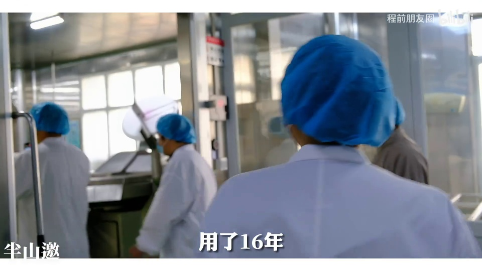
用了16年创办了一家
为什么有效：旁白信息点驱动快速换画面，以实景证据兑现“企业、工厂、员工”三个关键词。
新手复现：先录一句旁白，再为每个名词准备一条 0.6–1.5 秒实景；同一场景只保留最能说明问题的动作。
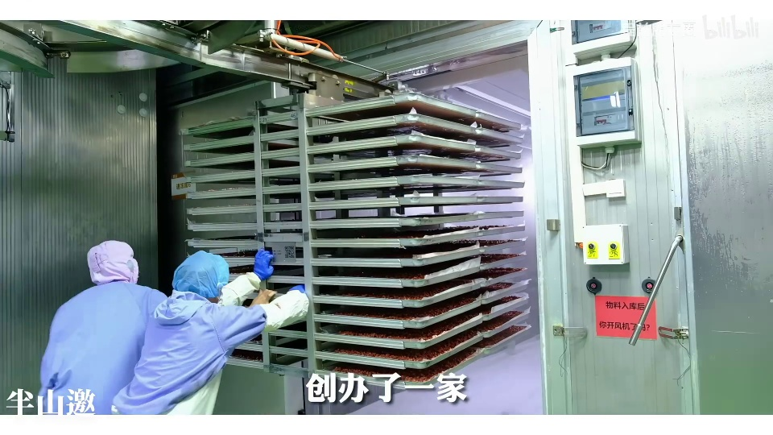
用了16年创办了一家／2.5亿营收300名员工的宠物
为什么有效：旁白信息点驱动快速换画面，以实景证据兑现“企业、工厂、员工”三个关键词。
新手复现：先录一句旁白，再为每个名词准备一条 0.6–1.5 秒实景；同一场景只保留最能说明问题的动作。
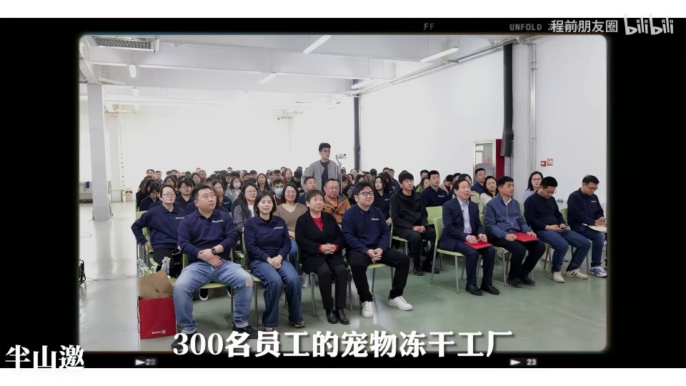
2.5亿营收300名员工的宠物
为什么有效：旁白信息点驱动快速换画面，以实景证据兑现“企业、工厂、员工”三个关键词。
新手复现：先录一句旁白，再为每个名词准备一条 0.6–1.5 秒实景；同一场景只保留最能说明问题的动作。
2.5亿营收300名员工的宠物／冻干工厂
为什么有效：旁白信息点驱动快速换画面，以实景证据兑现“企业、工厂、员工”三个关键词。
新手复现：先录一句旁白，再为每个名词准备一条 0.6–1.5 秒实景；同一场景只保留最能说明问题的动作。
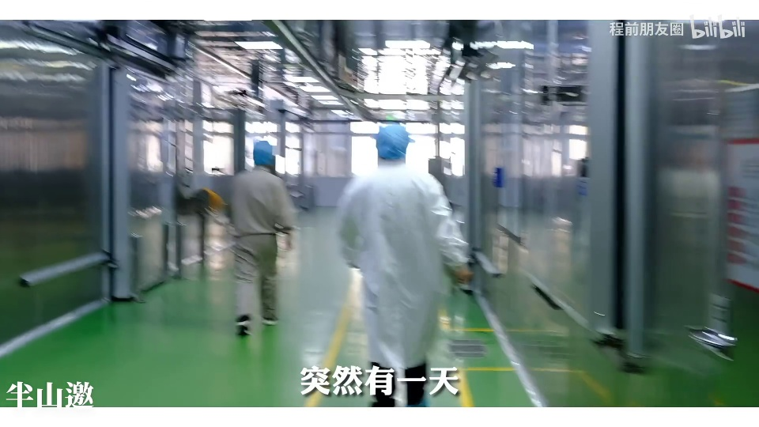
冻干工厂／突然有一天／他90后的儿子跟他说
为什么有效：旁白信息点驱动快速换画面，以实景证据兑现“企业、工厂、员工”三个关键词。
新手复现：先录一句旁白，再为每个名词准备一条 0.6–1.5 秒实景；同一场景只保留最能说明问题的动作。
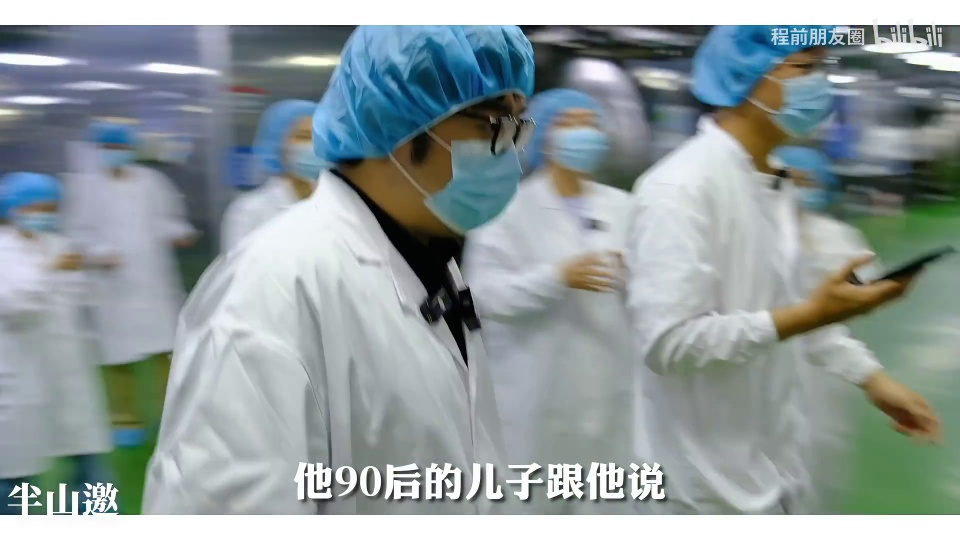
他90后的儿子跟他说
为什么有效：旁白信息点驱动快速换画面，以实景证据兑现“企业、工厂、员工”三个关键词。
新手复现：先录一句旁白，再为每个名词准备一条 0.6–1.5 秒实景；同一场景只保留最能说明问题的动作。
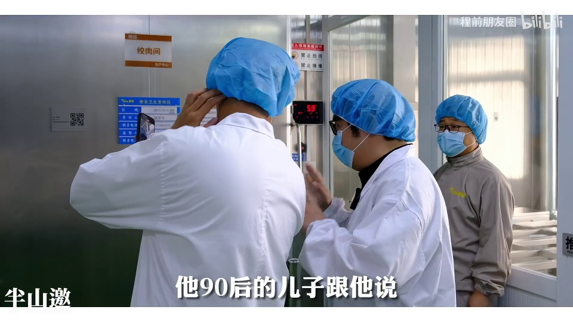
他90后的儿子跟他说／你别干了
为什么有效：旁白信息点驱动快速换画面，以实景证据兑现“企业、工厂、员工”三个关键词。
新手复现：先录一句旁白，再为每个名词准备一条 0.6–1.5 秒实景；同一场景只保留最能说明问题的动作。
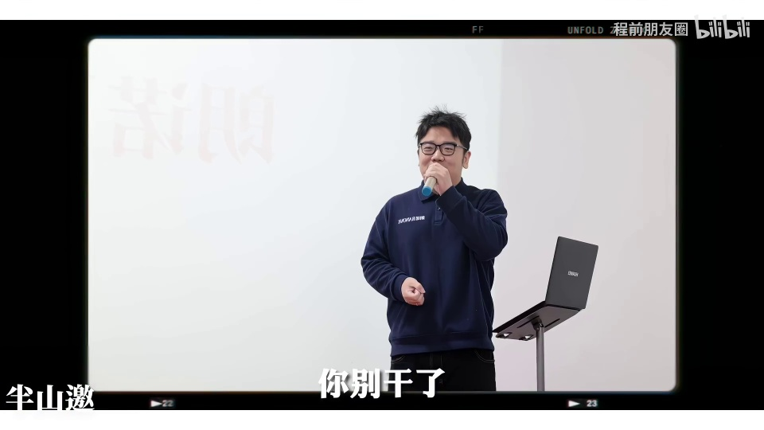
你别干了
为什么有效：旁白信息点驱动快速换画面，以实景证据兑现“企业、工厂、员工”三个关键词。
新手复现：先录一句旁白，再为每个名词准备一条 0.6–1.5 秒实景；同一场景只保留最能说明问题的动作。
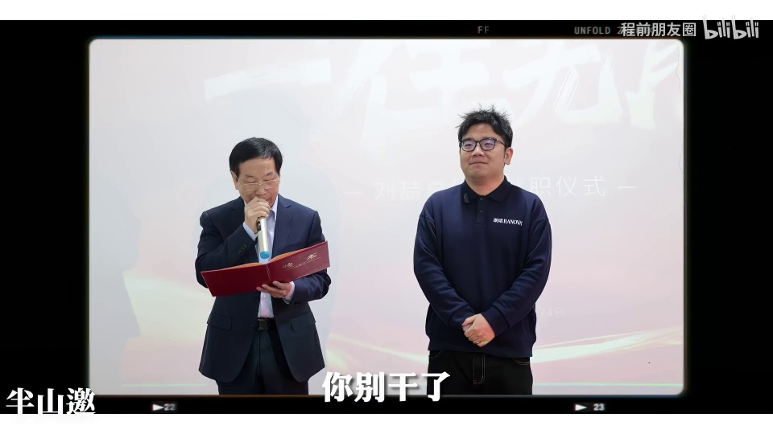
你别干了／我来
为什么有效：从工厂证据转到人物关系，用白底肖像和握手把“父子交接”具象化。
新手复现：在拍摄日补一组干净人物肖像和关系动作，剪辑时作为身份转场，不必依赖花哨转场。
我来／我跟我父亲说
为什么有效：从工厂证据转到人物关系，用白底肖像和握手把“父子交接”具象化。
新手复现：在拍摄日补一组干净人物肖像和关系动作，剪辑时作为身份转场，不必依赖花哨转场。
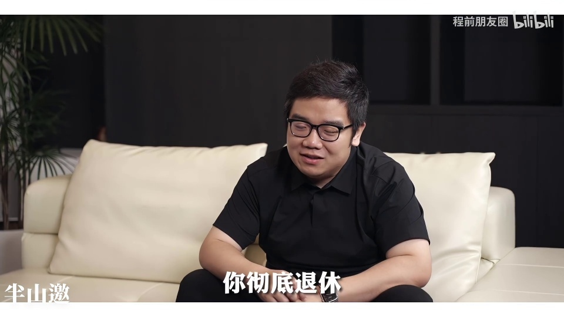
我跟我父亲说／你彻底退休吧／然后今天
为什么有效：从工厂证据转到人物关系，用白底肖像和握手把“父子交接”具象化。
新手复现：在拍摄日补一组干净人物肖像和关系动作，剪辑时作为身份转场，不必依赖花哨转场。
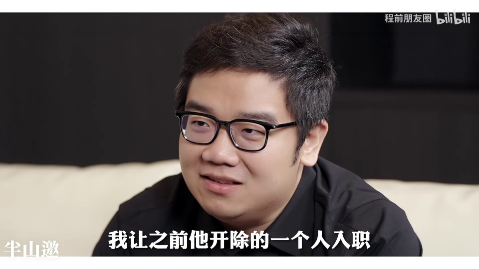
然后今天／我让之前他开除的一个人入职／他内心里会想
为什么有效：冲突金句与采访者反应交替，利用表情反馈放大戏剧性并制造悬念。
新手复现：把最强冲突原话前置；说话人一句、对方一个真实反应，优先保留表情而非机械轮流切。
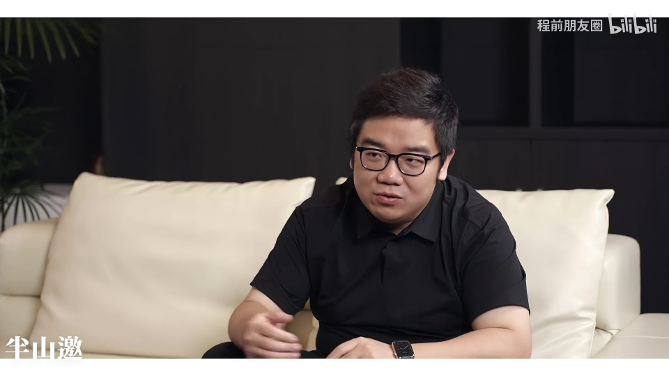
他内心里会想／这一天终究是会到来的／但是他没有想到是现在
为什么有效：冲突金句与采访者反应交替，利用表情反馈放大戏剧性并制造悬念。
新手复现：把最强冲突原话前置；说话人一句、对方一个真实反应，优先保留表情而非机械轮流切。
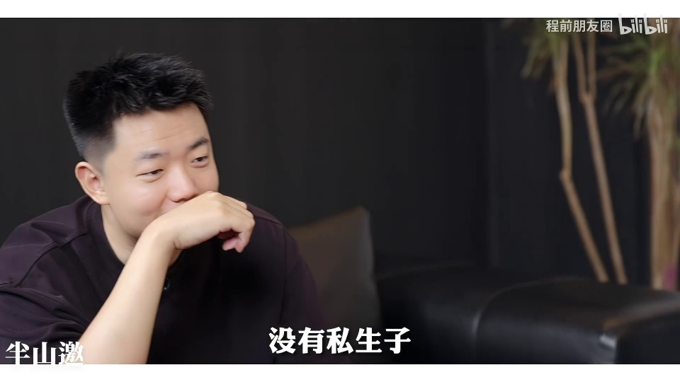
但是他没有想到是现在／没有私生子
为什么有效：冲突金句与采访者反应交替，利用表情反馈放大戏剧性并制造悬念。
新手复现：把最强冲突原话前置；说话人一句、对方一个真实反应，优先保留表情而非机械轮流切。
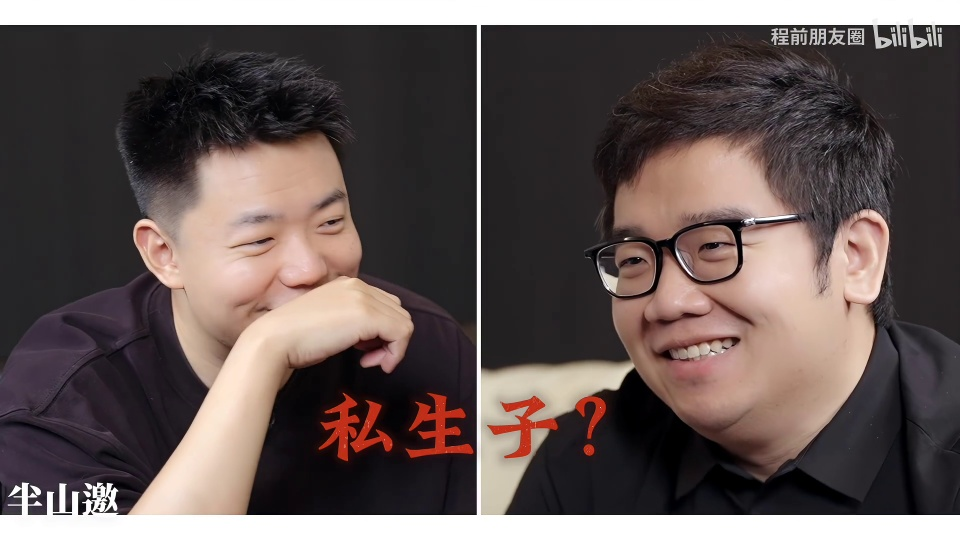
没有私生子
为什么有效：冲突金句与采访者反应交替，利用表情反馈放大戏剧性并制造悬念。
新手复现：把最强冲突原话前置；说话人一句、对方一个真实反应，优先保留表情而非机械轮流切。
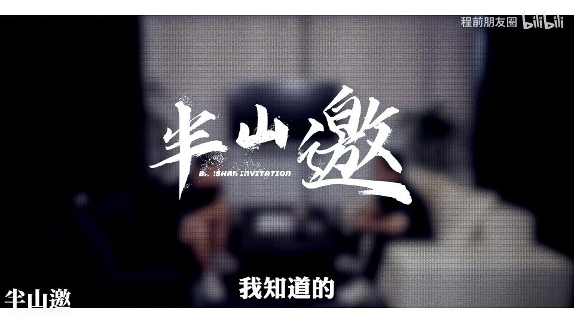
我知道的大部分的二代／不想接班的／我觉得百分之三四十是能接班的
为什么有效：片名卡切断冷开场，给观众一次呼吸并宣告正文开始。
新手复现：冷开场后留 3–5 秒简洁片名卡，让音乐或环境声完成一次重置。
我觉得百分之三四十是能接班的／或者说愿意接班的／百分之六七十是不接班的
为什么有效：在完整语义单元、追问或人物反应处换机位，保持自然呼吸并避免无意义跳切。
新手复现：优先在完整句尾、追问起点、语义转折和真实反应上切；长回答中可用一次双人景重置空间。
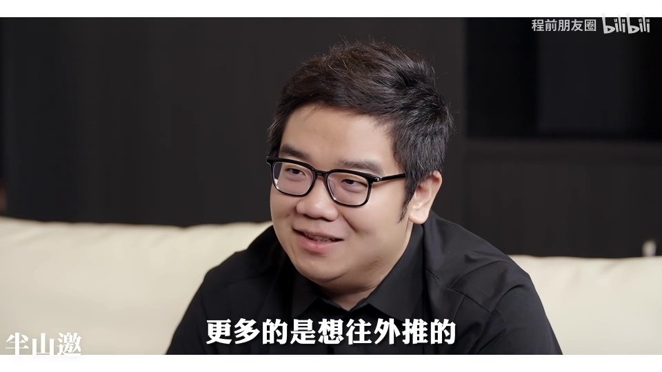
更多的是想往外推的／为什么不接的
为什么有效：在完整语义单元、追问或人物反应处换机位，保持自然呼吸并避免无意义跳切。
新手复现：优先在完整句尾、追问起点、语义转折和真实反应上切；长回答中可用一次双人景重置空间。
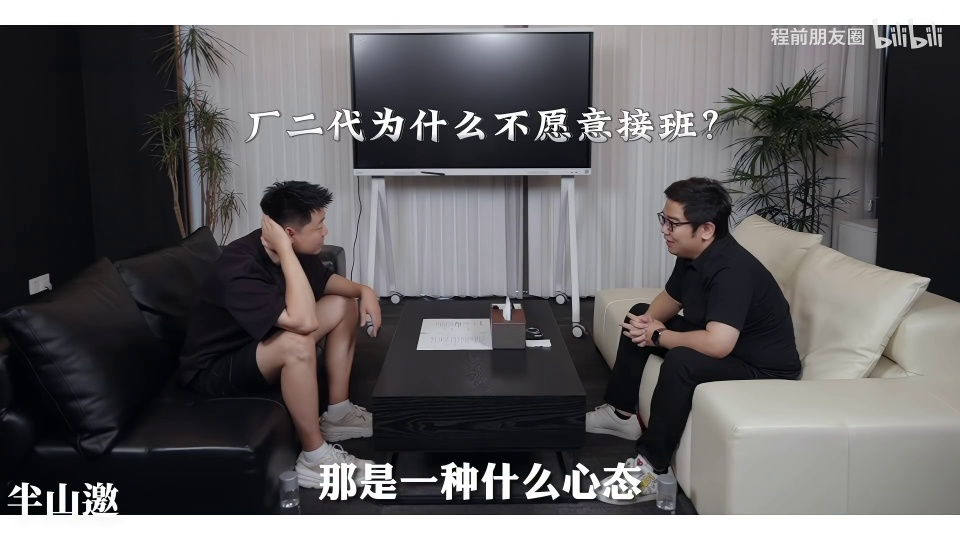
为什么不接的／那是一种什么形态的／有点躺的形态
为什么有效：在完整语义单元、追问或人物反应处换机位，保持自然呼吸并避免无意义跳切。
新手复现：优先在完整句尾、追问起点、语义转折和真实反应上切；长回答中可用一次双人景重置空间。
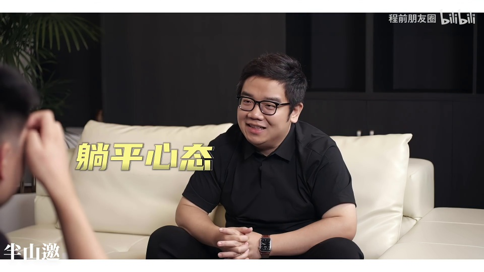
有点躺的形态
为什么有效：在完整语义单元、追问或人物反应处换机位，保持自然呼吸并避免无意义跳切。
新手复现：优先在完整句尾、追问起点、语义转折和真实反应上切；长回答中可用一次双人景重置空间。
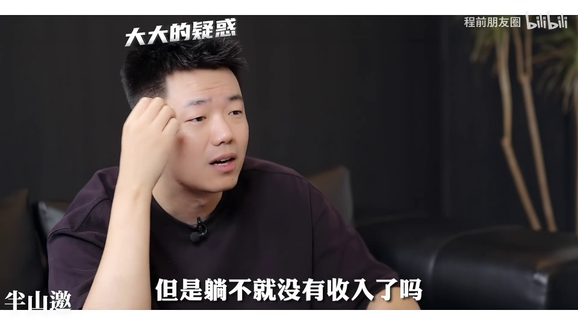
但是躺不就没有收入了吗／可以去上一个别的班
为什么有效：在完整语义单元、追问或人物反应处换机位，保持自然呼吸并避免无意义跳切。
新手复现：优先在完整句尾、追问起点、语义转折和真实反应上切；长回答中可用一次双人景重置空间。
可以去上一个别的班
为什么有效：在完整语义单元、追问或人物反应处换机位，保持自然呼吸并避免无意义跳切。
新手复现：优先在完整句尾、追问起点、语义转折和真实反应上切；长回答中可用一次双人景重置空间。
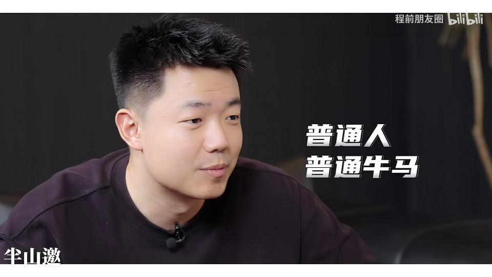
可以去上一个别的班／那不就变成一个普通人了吗／就变成一个普通牛马／在别的班也很累／那个班也可能会压榨
为什么有效：在完整语义单元、追问或人物反应处换机位，保持自然呼吸并避免无意义跳切。
新手复现：优先在完整句尾、追问起点、语义转折和真实反应上切；长回答中可用一次双人景重置空间。
那个班也可能会压榨／对／他可能宁愿当一个普通牛马／也不愿意接家的这个班
为什么有效：在完整语义单元、追问或人物反应处换机位，保持自然呼吸并避免无意义跳切。
新手复现：优先在完整句尾、追问起点、语义转折和真实反应上切；长回答中可用一次双人景重置空间。
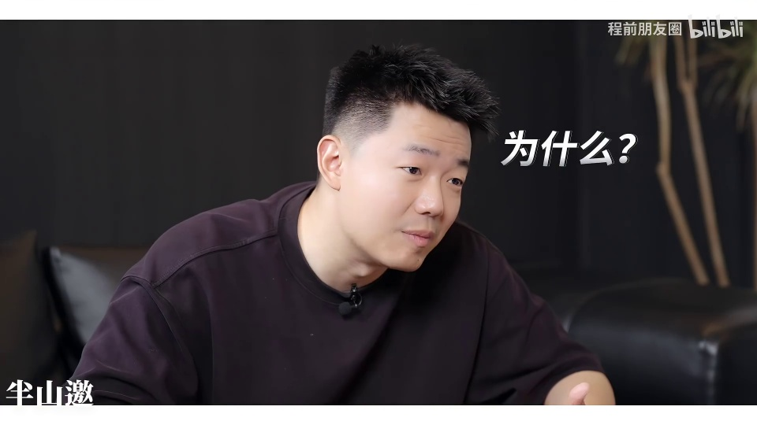
也不愿意接家的这个班／为什么
为什么有效：短促反应镜头或强调切点，贴近问答重音，给长回答增加节拍。
新手复现：优先在完整句尾、追问起点、语义转折和真实反应上切；长回答中可用一次双人景重置空间。
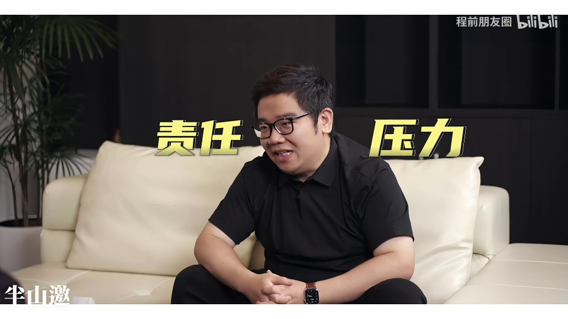
为什么／这个责任不是一般人可以扛／这个压力和担子／不是一般人可以接受
为什么有效：在完整语义单元、追问或人物反应处换机位，保持自然呼吸并避免无意义跳切。
新手复现：优先在完整句尾、追问起点、语义转折和真实反应上切；长回答中可用一次双人景重置空间。
| 章 | 时间 | 内容 | 叙事任务 | 节奏 |
|---|---|---|---|---|
| 01 | 00:00.00–00:25.32 | 冲突钩子 | 企业规模、父子交接、召回旧员工三个矛盾压缩出现。 | 17 刀 40.3 刀/分钟 |
| 02 | 00:25.32–01:05.60 | 二代为什么不接班 | 用“普通牛马”对比家族责任，把抽象议题变成可感知压力。 | 11 刀 16.4 刀/分钟 |
| 03 | 01:05.60–02:41.48 | 危机迫使提前接班 | 中高管集中离职成为行动触发点，故事从观点转为事件。 | 25 刀 15.6 刀/分钟 |
| 04 | 02:41.48–03:39.04 | 父子关系与权力交接 | 严父、少沟通、缺少正反馈，让交权不仅是职位变化。 | 14 刀 14.6 刀/分钟 |
| 05 | 03:39.04–04:37.00 | 两代管理理念冲突 | 父亲依赖个人强度，儿子强调团队协作与组织安全感。 | 16 刀 16.6 刀/分钟 |
| 06 | 04:37.00–05:48.48 | 召回被开除的人才 | 具体员工故事证明新管理不是口号，而是重新评价人才。 | 22 刀 18.5 刀/分钟 |
| 07 | 05:48.48–07:36.08 | 新接班人的领导观 | 从“如何服众”推进到世界品牌、百亿营收与授权员工。 | 30 刀 16.7 刀/分钟 |
| 08 | 07:36.08–08:06.04 | 海外市场的信任危机 | 展会 B-roll 将 Made in China 偏见从口述变成可视事实。 | 11 刀 22.0 刀/分钟 |
| 09 | 08:06.04–09:01.52 | 行业旧账与质量问题 | 产品、包装和宠物画面帮助观众理解偷工减料的后果。 | 23 刀 24.9 刀/分钟 |
| 10 | 09:01.52–10:11.18 | 透明工厂与全球目标 | 从开放摄像头的承诺上升到改变中国制造印象，以誓言收束。 | 16 刀 13.8 刀/分钟 |
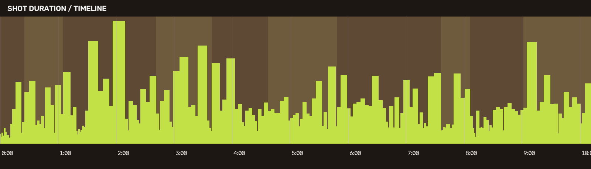
29 镜，28 刀，平均 2.07 秒。0–10.76 秒仅用约 0.4–1.5 秒镜头，把“人物—工厂—员工—父子”迅速建起来；进入问答后镜头逐渐延长。
60 秒后平均镜长 3.41 秒。重要长回答可持续 6–13 秒，说明成熟采访剪辑会保护完整语义；反打和双人景负责调节，而不是打断内容。
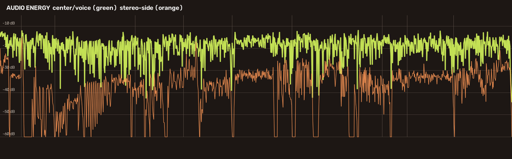
开场侧向层明显高于随后采访段，并与 13 个极短实景镜头重合。可确认的是混合声场更宽、更活跃；它和视觉蒙太奇共同制造“马上进入事件”的感觉。
人物金句与片名段的侧向能量显著降低，尤其 25 秒后的标题重置接近中置主导。声音收窄让“你彻底退休吧”与人物反应更集中。
侧向层不是一条恒定音乐床，而是在若干段落增强、再回落。这样不会持续抢对白，也能在较长回答之间平滑情绪。具体曲目、乐器与 BPM 未核验，不作猜测。
结尾侧向层再次增强，同时镜头稳定停留在受访者近景，配合“一定要做成”的重复句式，形成声音扩张、画面收紧的收束。
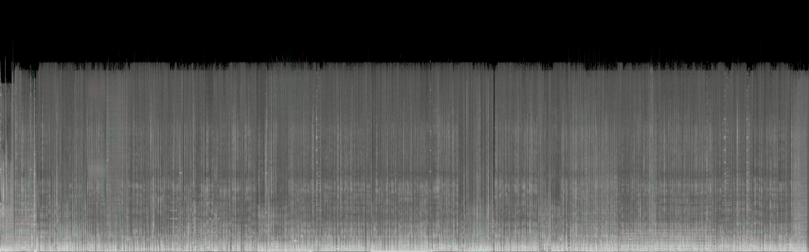
底部居中白色粗体，配描边／阴影；一屏通常只承载一个短语义单元。它固定在画面底部安全区，观众建立阅读习惯后不必追着字幕找。
“普通人／普通牛马”“责任／压力”等词被放大到人物旁边，承担的是观点标记和节奏重拍，而不是把整句再抄一遍。
深色背景、米色沙发与单人中近景提供清楚的脸部轮廓和侧边留白，重点词能放在人物之外，同时避开嘴部、手势和底部字幕。
美国展会、包装和宠物画面只在相关台词出现时进入；资料图与人物分区，不让观众同时读两组同等重要的文字。
找出冲突、行动原因、具体案例、价值观和结尾承诺，不要先按时间顺序机械粗剪。
优先选择极端决定、结果或冲突；本片用“让父亲退休”和“召回被开除员工”。
保留问题、主语、转折和结论。长回答可缩短，但不要把半句话硬拼成“金句”。
钩子约 0.6–1.5 秒／镜，解释段约 2–5 秒／镜，重要情绪或承诺允许 6–10 秒稳定停留。
优先句尾、追问、立场变化和真实反应；不要为了“有节奏”每两秒强制切一次。
每条 B-roll 回答一个问题：在哪里、谁、做什么、有什么证据。找不到对应关系就不要硬加。
对白先清楚，再让背景音乐在停顿和章节边界抬起；对白期间压低，结尾再适度托举。
检查口型、语义、时间码、字幕安全区、B-roll 对应关系和音乐是否抢对白，再看整体情绪曲线。
可搜索时间码、台词、B-roll、章节或关键词。CSV 版本位于同目录的《镜头清单.csv》。
| 镜头号 | 入点 | 出点 | 时长 | 画面 | 景别/机位 | 台词 | 切镜依据 | 字幕 | 音乐/音效 | 叙事功能 | 复现方法 | 证据等级 |
|---|---|---|---|---|---|---|---|---|---|---|---|---|
| 1 | 00:00:00.000 | 00:00:00.960 | 0.96s | 展会摊位：年长创始人与采访话筒同框 | B-roll／中景或特写／运动机位 | 天津一个草根出身的老企业家 | 旁白信息点驱动快速换画面，以实景证据兑现“企业、工厂、员工”三个关键词。 | 底部居中白色粗体逐句字幕，描边／阴影保证复杂背景可读。 | 开场混合声的立体声侧向能量较强，配合快速蒙太奇形成启动感。 | 快速建立企业规模、工厂真实性与父子关系。 | 先录一句旁白，再为每个名词准备一条 0.6–1.5 秒实景；同一场景只保留最能说明问题的动作。 | 画面可见＋音频转写；背景音乐结论仅依据混合音轨能量，推断项已标明 |
| 2 | 00:00:00.960 | 00:00:01.640 | 0.68s | 创始人近景，手持产品或说明物 | B-roll／中景或特写／运动机位 | 天津一个草根出身的老企业家 | 旁白信息点驱动快速换画面，以实景证据兑现“企业、工厂、员工”三个关键词。 | 底部居中白色粗体逐句字幕，描边／阴影保证复杂背景可读。 | 开场混合声的立体声侧向能量较强，配合快速蒙太奇形成启动感。 | 快速建立企业规模、工厂真实性与父子关系。 | 先录一句旁白，再为每个名词准备一条 0.6–1.5 秒实景；同一场景只保留最能说明问题的动作。 | 画面可见＋音频转写；背景音乐结论仅依据混合音轨能量，推断项已标明 |
| 3 | 00:00:01.640 | 00:00:02.720 | 1.08s | 展会交流，人物与产品同框 | B-roll／中景或特写／运动机位 | 天津一个草根出身的老企业家／用了16年创办了一家 | 旁白信息点驱动快速换画面，以实景证据兑现“企业、工厂、员工”三个关键词。 | 底部居中白色粗体逐句字幕，描边／阴影保证复杂背景可读。 | 开场混合声的立体声侧向能量较强，配合快速蒙太奇形成启动感。 | 快速建立企业规模、工厂真实性与父子关系。 | 先录一句旁白，再为每个名词准备一条 0.6–1.5 秒实景；同一场景只保留最能说明问题的动作。 | 画面可见＋音频转写；背景音乐结论仅依据混合音轨能量，推断项已标明 |
| 4 | 00:00:02.720 | 00:00:03.480 | 0.76s | 工厂洁净区通道，人员穿防护服 | B-roll／中景或特写／运动机位 | 用了16年创办了一家 | 旁白信息点驱动快速换画面，以实景证据兑现“企业、工厂、员工”三个关键词。 | 底部居中白色粗体逐句字幕，描边／阴影保证复杂背景可读。 | 开场混合声的立体声侧向能量较强，配合快速蒙太奇形成启动感。 | 快速建立企业规模、工厂真实性与父子关系。 | 先录一句旁白，再为每个名词准备一条 0.6–1.5 秒实景；同一场景只保留最能说明问题的动作。 | 画面可见＋音频转写；背景音乐结论仅依据混合音轨能量，推断项已标明 |
| 5 | 00:00:03.480 | 00:00:03.920 | 0.44s | 冻干托盘与生产设备特写 | B-roll／中景或特写／运动机位 | 用了16年创办了一家／2.5亿营收300名员工的宠物 | 旁白信息点驱动快速换画面，以实景证据兑现“企业、工厂、员工”三个关键词。 | 底部居中白色粗体逐句字幕，描边／阴影保证复杂背景可读。 | 开场混合声的立体声侧向能量较强，配合快速蒙太奇形成启动感。 | 快速建立企业规模、工厂真实性与父子关系。 | 先录一句旁白，再为每个名词准备一条 0.6–1.5 秒实景；同一场景只保留最能说明问题的动作。 | 画面可见＋音频转写；背景音乐结论仅依据混合音轨能量，推断项已标明 |
| 6 | 00:00:03.920 | 00:00:05.440 | 1.52s | 工厂设备与生产环境 | B-roll／中景或特写／运动机位 | 2.5亿营收300名员工的宠物 | 旁白信息点驱动快速换画面，以实景证据兑现“企业、工厂、员工”三个关键词。 | 底部居中白色粗体逐句字幕，描边／阴影保证复杂背景可读。 | 开场混合声的立体声侧向能量较强，配合快速蒙太奇形成启动感。 | 快速建立企业规模、工厂真实性与父子关系。 | 先录一句旁白，再为每个名词准备一条 0.6–1.5 秒实景；同一场景只保留最能说明问题的动作。 | 画面可见＋音频转写；背景音乐结论仅依据混合音轨能量，推断项已标明 |
| 7 | 00:00:05.440 | 00:00:06.560 | 1.12s | 企业团队合影 | B-roll／中景或特写／运动机位 | 2.5亿营收300名员工的宠物／冻干工厂 | 旁白信息点驱动快速换画面，以实景证据兑现“企业、工厂、员工”三个关键词。 | 底部居中白色粗体逐句字幕，描边／阴影保证复杂背景可读。 | 开场混合声的立体声侧向能量较强，配合快速蒙太奇形成启动感。 | 快速建立企业规模、工厂真实性与父子关系。 | 先录一句旁白，再为每个名词准备一条 0.6–1.5 秒实景；同一场景只保留最能说明问题的动作。 | 画面可见＋音频转写；背景音乐结论仅依据混合音轨能量，推断项已标明 |
| 8 | 00:00:06.560 | 00:00:07.400 | 0.84s | 团队与展会标识合影 | B-roll／中景或特写／运动机位 | 冻干工厂／突然有一天／他90后的儿子跟他说 | 旁白信息点驱动快速换画面，以实景证据兑现“企业、工厂、员工”三个关键词。 | 底部居中白色粗体逐句字幕，描边／阴影保证复杂背景可读。 | 开场混合声的立体声侧向能量较强，配合快速蒙太奇形成启动感。 | 快速建立企业规模、工厂真实性与父子关系。 | 先录一句旁白，再为每个名词准备一条 0.6–1.5 秒实景；同一场景只保留最能说明问题的动作。 | 画面可见＋音频转写；背景音乐结论仅依据混合音轨能量，推断项已标明 |
| 9 | 00:00:07.400 | 00:00:08.240 | 0.84s | 洁净车间纵深通道 | B-roll／中景或特写／运动机位 | 他90后的儿子跟他说 | 旁白信息点驱动快速换画面，以实景证据兑现“企业、工厂、员工”三个关键词。 | 底部居中白色粗体逐句字幕，描边／阴影保证复杂背景可读。 | 开场混合声的立体声侧向能量较强，配合快速蒙太奇形成启动感。 | 快速建立企业规模、工厂真实性与父子关系。 | 先录一句旁白，再为每个名词准备一条 0.6–1.5 秒实景；同一场景只保留最能说明问题的动作。 | 画面可见＋音频转写；背景音乐结论仅依据混合音轨能量，推断项已标明 |
| 10 | 00:00:08.240 | 00:00:09.080 | 0.84s | 员工操作产品或工序近景 | B-roll／中景或特写／运动机位 | 他90后的儿子跟他说／你别干了 | 旁白信息点驱动快速换画面，以实景证据兑现“企业、工厂、员工”三个关键词。 | 底部居中白色粗体逐句字幕，描边／阴影保证复杂背景可读。 | 开场混合声的立体声侧向能量较强，配合快速蒙太奇形成启动感。 | 快速建立企业规模、工厂真实性与父子关系。 | 先录一句旁白，再为每个名词准备一条 0.6–1.5 秒实景；同一场景只保留最能说明问题的动作。 | 画面可见＋音频转写；背景音乐结论仅依据混合音轨能量，推断项已标明 |
| 11 | 00:00:09.080 | 00:00:09.640 | 0.56s | 多名员工在生产区工作 | B-roll／中景或特写／运动机位 | 你别干了 | 旁白信息点驱动快速换画面，以实景证据兑现“企业、工厂、员工”三个关键词。 | 底部居中白色粗体逐句字幕，描边／阴影保证复杂背景可读。 | 开场混合声的立体声侧向能量较强，配合快速蒙太奇形成启动感。 | 快速建立企业规模、工厂真实性与父子关系。 | 先录一句旁白，再为每个名词准备一条 0.6–1.5 秒实景；同一场景只保留最能说明问题的动作。 | 画面可见＋音频转写；背景音乐结论仅依据混合音轨能量，推断项已标明 |
| 12 | 00:00:09.640 | 00:00:10.080 | 0.44s | 白底人物肖像式介绍镜头 | 全身景／正面固定机位 | 你别干了／我来 | 从工厂证据转到人物关系，用白底肖像和握手把“父子交接”具象化。 | 底部居中白色粗体逐句字幕，描边／阴影保证复杂背景可读。 | 开场混合声的立体声侧向能量较强，配合快速蒙太奇形成启动感。 | 快速建立企业规模、工厂真实性与父子关系。 | 在拍摄日补一组干净人物肖像和关系动作，剪辑时作为身份转场，不必依赖花哨转场。 | 画面可见＋音频转写；背景音乐结论仅依据混合音轨能量，推断项已标明 |
| 13 | 00:00:10.080 | 00:00:10.760 | 0.68s | 白底父子同框 | 双人全身景／正面固定机位 | 我来／我跟我父亲说 | 从工厂证据转到人物关系，用白底肖像和握手把“父子交接”具象化。 | 底部居中白色粗体逐句字幕，描边／阴影保证复杂背景可读。 | 开场混合声的立体声侧向能量较强，配合快速蒙太奇形成启动感。 | 快速建立企业规模、工厂真实性与父子关系。 | 在拍摄日补一组干净人物肖像和关系动作，剪辑时作为身份转场，不必依赖花哨转场。 | 画面可见＋音频转写；背景音乐结论仅依据混合音轨能量，推断项已标明 |
| 14 | 00:00:10.760 | 00:00:12.680 | 1.92s | 父子握手，视觉化“交接” | 双人中景／正面固定机位 | 我跟我父亲说／你彻底退休吧／然后今天 | 从工厂证据转到人物关系，用白底肖像和握手把“父子交接”具象化。 | 底部居中白色粗体逐句字幕，描边／阴影保证复杂背景可读。 | 开场混合声的立体声侧向能量较强，配合快速蒙太奇形成启动感。 | 快速建立企业规模、工厂真实性与父子关系。 | 在拍摄日补一组干净人物肖像和关系动作，剪辑时作为身份转场，不必依赖花哨转场。 | 画面可见＋音频转写；背景音乐结论仅依据混合音轨能量，推断项已标明 |
| 15 | 00:00:12.680 | 00:00:16.080 | 3.40s | 接班人单人中近景，抛出“父亲退休” | 单人中近景或近景／正反打固定机位 | 然后今天／我让之前他开除的一个人入职／他内心里会想 | 冲突金句与采访者反应交替，利用表情反馈放大戏剧性并制造悬念。 | 底部居中白色粗体逐句字幕，描边／阴影保证复杂背景可读。 | 可测到较明显立体声侧向层，可能包含背景音乐、空间声或环境声；不据此猜曲目。 | 推进“冲突钩子”：企业规模、父子交接、召回旧员工三个矛盾压缩出现。 | 把最强冲突原话前置；说话人一句、对方一个真实反应，优先保留表情而非机械轮流切。 | 画面可见＋音频转写；背景音乐结论仅依据混合音轨能量，推断项已标明 |
| 16 | 00:00:16.080 | 00:00:22.120 | 6.04s | 接班人近景，补充召回被开除员工 | 单人中近景或近景／正反打固定机位 | 他内心里会想／这一天终究是会到来的／但是他没有想到是现在 | 冲突金句与采访者反应交替，利用表情反馈放大戏剧性并制造悬念。 | 底部居中白色粗体逐句字幕，描边／阴影保证复杂背景可读。 | 可测到较明显立体声侧向层，可能包含背景音乐、空间声或环境声；不据此猜曲目。 | 推进“冲突钩子”：企业规模、父子交接、召回旧员工三个矛盾压缩出现。 | 把最强冲突原话前置；说话人一句、对方一个真实反应，优先保留表情而非机械轮流切。 | 画面可见＋音频转写；背景音乐结论仅依据混合音轨能量，推断项已标明 |
| 17 | 00:00:22.120 | 00:00:23.200 | 1.08s | 采访者反应近景 | 单人中近景或近景／正反打固定机位 | 但是他没有想到是现在／没有私生子 | 冲突金句与采访者反应交替，利用表情反馈放大戏剧性并制造悬念。 | 底部居中白色粗体逐句字幕，描边／阴影保证复杂背景可读。 | 可测到较明显立体声侧向层，可能包含背景音乐、空间声或环境声；不据此猜曲目。 | 推进“冲突钩子”：企业规模、父子交接、召回旧员工三个矛盾压缩出现。 | 把最强冲突原话前置；说话人一句、对方一个真实反应，优先保留表情而非机械轮流切。 | 画面可见＋音频转写；背景音乐结论仅依据混合音轨能量，推断项已标明 |
| 18 | 00:00:23.200 | 00:00:25.320 | 2.12s | 采访者笑意反应，字幕“没有私生子” | 单人中近景或近景／正反打固定机位 | 没有私生子 | 冲突金句与采访者反应交替，利用表情反馈放大戏剧性并制造悬念。 | 底部白色逐句字幕＋画面中部／侧边放大关键词。 | 可测到较明显立体声侧向层，可能包含背景音乐、空间声或环境声；不据此猜曲目。 | 推进“冲突钩子”：企业规模、父子交接、召回旧员工三个矛盾压缩出现。 | 把最强冲突原话前置；说话人一句、对方一个真实反应，优先保留表情而非机械轮流切。 | 画面可见＋音频转写；背景音乐结论仅依据混合音轨能量，推断项已标明 |
| 19 | 00:00:25.320 | 00:00:30.360 | 5.04s | 黑白书法片名与栏目章节点 | 全屏片名卡 | 我知道的大部分的二代／不想接班的／我觉得百分之三四十是能接班的 | 片名卡切断冷开场，给观众一次呼吸并宣告正文开始。 | 片名字卡；无常规底部字幕。 | 片名段声场明显收窄，形成与冷开场的听觉反差。 | 冷开场与正文之间的章节标点。 | 冷开场后留 3–5 秒简洁片名卡，让音乐或环境声完成一次重置。 | 画面可见＋音频转写；背景音乐结论仅依据混合音轨能量，推断项已标明 |
| 20 | 00:00:30.360 | 00:00:36.520 | 6.16s | 接班人中近景，进入二代接班话题 | 单人中景／受访者机位 | 我觉得百分之三四十是能接班的／或者说愿意接班的／百分之六七十是不接班的 | 在完整语义单元、追问或人物反应处换机位，保持自然呼吸并避免无意义跳切。 | 底部居中白色粗体逐句字幕，描边／阴影保证复杂背景可读。 | 语音中置明显，侧向层较弱；切点主要由语义和反应驱动。 | 推进“二代为什么不接班”：用“普通牛马”对比家族责任，把抽象议题变成可感知压力。 | 优先在完整句尾、追问起点、语义转折和真实反应上切；长回答中可用一次双人景重置空间。 | 画面可见＋音频转写；背景音乐结论仅依据混合音轨能量，推断项已标明 |
| 21 | 00:00:36.520 | 00:00:38.320 | 1.80s | 接班人近景，说明接班比例 | 单人近景／受访者机位 | 更多的是想往外推的／为什么不接的 | 在完整语义单元、追问或人物反应处换机位，保持自然呼吸并避免无意义跳切。 | 底部居中白色粗体逐句字幕，描边／阴影保证复杂背景可读。 | 语音中置明显，侧向层较弱；切点主要由语义和反应驱动。 | 推进“二代为什么不接班”：用“普通牛马”对比家族责任，把抽象议题变成可感知压力。 | 优先在完整句尾、追问起点、语义转折和真实反应上切；长回答中可用一次双人景重置空间。 | 画面可见＋音频转写；背景音乐结论仅依据混合音轨能量，推断项已标明 |
| 22 | 00:00:38.320 | 00:00:40.560 | 2.24s | 双人全景，重新交代采访空间 | 双人全景／空间建立镜头 | 为什么不接的／那是一种什么形态的／有点躺的形态 | 在完整语义单元、追问或人物反应处换机位，保持自然呼吸并避免无意义跳切。 | 底部居中白色粗体逐句字幕，描边／阴影保证复杂背景可读。 | 语音中置明显，侧向层较弱；切点主要由语义和反应驱动。 | 推进“二代为什么不接班”：用“普通牛马”对比家族责任，把抽象议题变成可感知压力。 | 优先在完整句尾、追问起点、语义转折和真实反应上切；长回答中可用一次双人景重置空间。 | 画面可见＋音频转写；背景音乐结论仅依据混合音轨能量，推断项已标明 |
| 23 | 00:00:40.560 | 00:00:42.440 | 1.88s | 接班人中近景，解释“不接班” | 单人中近景／受访者机位 | 有点躺的形态 | 在完整语义单元、追问或人物反应处换机位，保持自然呼吸并避免无意义跳切。 | 底部居中白色粗体逐句字幕，描边／阴影保证复杂背景可读。 | 中等立体声侧向层，人物语音仍稳定居中。 | 推进“二代为什么不接班”：用“普通牛马”对比家族责任，把抽象议题变成可感知压力。 | 优先在完整句尾、追问起点、语义转折和真实反应上切；长回答中可用一次双人景重置空间。 | 画面可见＋音频转写；背景音乐结论仅依据混合音轨能量，推断项已标明 |
| 24 | 00:00:42.440 | 00:00:45.160 | 2.72s | 采访者近景，追问躺平是否没有收入 | 单人近景／采访者反打 | 但是躺不就没有收入了吗／可以去上一个别的班 | 在完整语义单元、追问或人物反应处换机位，保持自然呼吸并避免无意义跳切。 | 底部居中白色粗体逐句字幕，描边／阴影保证复杂背景可读。 | 中等立体声侧向层，人物语音仍稳定居中。 | 推进“二代为什么不接班”：用“普通牛马”对比家族责任，把抽象议题变成可感知压力。 | 优先在完整句尾、追问起点、语义转折和真实反应上切；长回答中可用一次双人景重置空间。 | 画面可见＋音频转写；背景音乐结论仅依据混合音轨能量，推断项已标明 |
| 25 | 00:00:45.160 | 00:00:46.680 | 1.52s | 接班人中近景，回答可以去上别的班 | 单人中近景／受访者机位 | 可以去上一个别的班 | 在完整语义单元、追问或人物反应处换机位，保持自然呼吸并避免无意义跳切。 | 底部居中白色粗体逐句字幕，描边／阴影保证复杂背景可读。 | 语音中置明显，侧向层较弱；切点主要由语义和反应驱动。 | 推进“二代为什么不接班”：用“普通牛马”对比家族责任，把抽象议题变成可感知压力。 | 优先在完整句尾、追问起点、语义转折和真实反应上切；长回答中可用一次双人景重置空间。 | 画面可见＋音频转写；背景音乐结论仅依据混合音轨能量，推断项已标明 |
| 26 | 00:00:46.680 | 00:00:52.160 | 5.48s | 采访者近景，强调“普通人／普通牛马” | 单人近景／采访者反打 | 可以去上一个别的班／那不就变成一个普通人了吗／就变成一个普通牛马／在别的班也很累／那个班也可能会压榨 | 在完整语义单元、追问或人物反应处换机位，保持自然呼吸并避免无意义跳切。 | 底部白色逐句字幕＋画面中部／侧边放大关键词。 | 语音中置明显，侧向层较弱；切点主要由语义和反应驱动。 | 推进“二代为什么不接班”：用“普通牛马”对比家族责任，把抽象议题变成可感知压力。 | 优先在完整句尾、追问起点、语义转折和真实反应上切；长回答中可用一次双人景重置空间。 | 画面可见＋音频转写；背景音乐结论仅依据混合音轨能量，推断项已标明 |
| 27 | 00:00:52.160 | 00:00:55.920 | 3.76s | 接班人中近景，回应外部工作的压力 | 单人中近景／受访者机位 | 那个班也可能会压榨／对／他可能宁愿当一个普通牛马／也不愿意接家的这个班 | 在完整语义单元、追问或人物反应处换机位，保持自然呼吸并避免无意义跳切。 | 底部居中白色粗体逐句字幕，描边／阴影保证复杂背景可读。 | 语音中置明显，侧向层较弱；切点主要由语义和反应驱动。 | 推进“二代为什么不接班”：用“普通牛马”对比家族责任，把抽象议题变成可感知压力。 | 优先在完整句尾、追问起点、语义转折和真实反应上切；长回答中可用一次双人景重置空间。 | 画面可见＋音频转写；背景音乐结论仅依据混合音轨能量，推断项已标明 |
| 28 | 00:00:55.920 | 00:00:57.000 | 1.08s | 采访者近景，用单句“为什么”追问 | 单人近景／采访者反打 | 也不愿意接家的这个班／为什么 | 短促反应镜头或强调切点，贴近问答重音，给长回答增加节拍。 | 底部白色逐句字幕＋画面中部／侧边放大关键词。 | 中等立体声侧向层，人物语音仍稳定居中。 | 推进“二代为什么不接班”：用“普通牛马”对比家族责任，把抽象议题变成可感知压力。 | 优先在完整句尾、追问起点、语义转折和真实反应上切；长回答中可用一次双人景重置空间。 | 画面可见＋音频转写；背景音乐结论仅依据混合音轨能量，推断项已标明 |
| 29 | 00:00:57.000 | 00:01:02.720 | 5.72s | 接班人中近景，关键词“责任／压力”收束首分钟 | 单人中近景／受访者机位 | 为什么／这个责任不是一般人可以扛／这个压力和担子／不是一般人可以接受 | 在完整语义单元、追问或人物反应处换机位，保持自然呼吸并避免无意义跳切。 | 底部白色逐句字幕＋画面中部／侧边放大关键词。 | 可测到较明显立体声侧向层，可能包含背景音乐、空间声或环境声；不据此猜曲目。 | 推进“二代为什么不接班”：用“普通牛马”对比家族责任，把抽象议题变成可感知压力。 | 优先在完整句尾、追问起点、语义转折和真实反应上切；长回答中可用一次双人景重置空间。 | 画面可见＋音频转写；背景音乐结论仅依据混合音轨能量，推断项已标明 |
| 30 | 00:01:02.720 | 00:01:05.600 | 2.88s | 采访 A-roll：受访者、采访者的单人正反打或双人交代镜头 | 单人中近景为主／固定正反打，少量双人全景 | 你为什么最后想接这个班呢 | 在完整语义单元、追问或人物反应处换机位，保持自然呼吸并避免无意义跳切。 | 底部居中白色粗体逐句字幕，描边／阴影保证复杂背景可读。 | 语音中置明显，侧向层较弱；切点主要由语义和反应驱动。 | 推进“二代为什么不接班”：用“普通牛马”对比家族责任，把抽象议题变成可感知压力。 | 优先在完整句尾、追问起点、语义转折和真实反应上切；长回答中可用一次双人景重置空间。 | 画面可见＋音频转写；背景音乐结论仅依据混合音轨能量，推断项已标明 |
| 31 | 00:01:05.600 | 00:01:12.600 | 7.00s | 采访 A-roll：受访者、采访者的单人正反打或双人交代镜头 | 单人中近景为主／固定正反打，少量双人全景 | 你为什么最后想接这个班呢／其实我在当公司总经理之前／我只负责了公司的外贸出口一个板块 | 在完整语义单元、追问或人物反应处换机位，保持自然呼吸并避免无意义跳切。 | 底部居中白色粗体逐句字幕，描边／阴影保证复杂背景可读。 | 语音中置明显，侧向层较弱；切点主要由语义和反应驱动。 | 推进“危机迫使提前接班”：中高管集中离职成为行动触发点，故事从观点转为事件。 | 优先在完整句尾、追问起点、语义转折和真实反应上切；长回答中可用一次双人景重置空间。 | 画面可见＋音频转写；背景音乐结论仅依据混合音轨能量，推断项已标明 |
| 32 | 00:01:12.600 | 00:01:15.360 | 2.76s | 采访 A-roll：受访者、采访者的单人正反打或双人交代镜头 | 单人中近景为主／固定正反打，少量双人全景 | 我只负责了公司的外贸出口一个板块／我最开始的想法是／我要在所有的岗位轮岗一遍 | 在完整语义单元、追问或人物反应处换机位，保持自然呼吸并避免无意义跳切。 | 底部居中白色粗体逐句字幕，描边／阴影保证复杂背景可读。 | 语音中置明显，侧向层较弱；切点主要由语义和反应驱动。 | 推进“危机迫使提前接班”：中高管集中离职成为行动触发点，故事从观点转为事件。 | 优先在完整句尾、追问起点、语义转折和真实反应上切；长回答中可用一次双人景重置空间。 | 画面可见＋音频转写；背景音乐结论仅依据混合音轨能量，推断项已标明 |
| 33 | 00:01:15.360 | 00:01:18.960 | 3.60s | 采访 A-roll：受访者、采访者的单人正反打或双人交代镜头 | 单人中近景为主／固定正反打，少量双人全景 | 我要在所有的岗位轮岗一遍／我再去当这个总经理／本来是谁在当总经理 | 在完整语义单元、追问或人物反应处换机位，保持自然呼吸并避免无意义跳切。 | 底部居中白色粗体逐句字幕，描边／阴影保证复杂背景可读。 | 中等立体声侧向层，人物语音仍稳定居中。 | 推进“危机迫使提前接班”：中高管集中离职成为行动触发点，故事从观点转为事件。 | 优先在完整句尾、追问起点、语义转折和真实反应上切；长回答中可用一次双人景重置空间。 | 画面可见＋音频转写；背景音乐结论仅依据混合音轨能量，推断项已标明 |
| 34 | 00:01:18.960 | 00:01:20.200 | 1.24s | 采访 A-roll：受访者、采访者的单人正反打或双人交代镜头 | 单人中近景为主／固定正反打，少量双人全景 | 本来是谁在当总经理 | 在完整语义单元、追问或人物反应处换机位，保持自然呼吸并避免无意义跳切。 | 底部居中白色粗体逐句字幕，描边／阴影保证复杂背景可读。 | 语音中置明显，侧向层较弱；切点主要由语义和反应驱动。 | 推进“危机迫使提前接班”：中高管集中离职成为行动触发点，故事从观点转为事件。 | 优先在完整句尾、追问起点、语义转折和真实反应上切；长回答中可用一次双人景重置空间。 | 画面可见＋音频转写；背景音乐结论仅依据混合音轨能量，推断项已标明 |
| 35 | 00:01:20.200 | 00:01:21.080 | 0.88s | 采访 A-roll：受访者、采访者的单人正反打或双人交代镜头 | 单人中近景为主／固定正反打，少量双人全景 | 我父亲／你提的 | 短促反应镜头或强调切点，贴近问答重音，给长回答增加节拍。 | 底部居中白色粗体逐句字幕，描边／阴影保证复杂背景可读。 | 语音中置明显，侧向层较弱；切点主要由语义和反应驱动。 | 推进“危机迫使提前接班”：中高管集中离职成为行动触发点，故事从观点转为事件。 | 优先在完整句尾、追问起点、语义转折和真实反应上切；长回答中可用一次双人景重置空间。 | 画面可见＋音频转写；背景音乐结论仅依据混合音轨能量，推断项已标明 |
| 36 | 00:01:21.080 | 00:01:22.480 | 1.40s | 采访 A-roll：受访者、采访者的单人正反打或双人交代镜头 | 单人中近景为主／固定正反打，少量双人全景 | 你提的／对 | 在完整语义单元、追问或人物反应处换机位，保持自然呼吸并避免无意义跳切。 | 底部居中白色粗体逐句字幕，描边／阴影保证复杂背景可读。 | 中等立体声侧向层，人物语音仍稳定居中。 | 推进“危机迫使提前接班”：中高管集中离职成为行动触发点，故事从观点转为事件。 | 优先在完整句尾、追问起点、语义转折和真实反应上切；长回答中可用一次双人景重置空间。 | 画面可见＋音频转写；背景音乐结论仅依据混合音轨能量，推断项已标明 |
| 37 | 00:01:22.480 | 00:01:23.600 | 1.12s | 采访 A-roll：受访者、采访者的单人正反打或双人交代镜头 | 单人中近景为主／固定正反打，少量双人全景 | 我提的／你直接跟他提的 | 短促反应镜头或强调切点，贴近问答重音，给长回答增加节拍。 | 底部居中白色粗体逐句字幕，描边／阴影保证复杂背景可读。 | 中等立体声侧向层，人物语音仍稳定居中。 | 推进“危机迫使提前接班”：中高管集中离职成为行动触发点，故事从观点转为事件。 | 优先在完整句尾、追问起点、语义转折和真实反应上切；长回答中可用一次双人景重置空间。 | 画面可见＋音频转写；背景音乐结论仅依据混合音轨能量，推断项已标明 |
| 38 | 00:01:23.600 | 00:01:24.920 | 1.32s | 采访 A-roll：受访者、采访者的单人正反打或双人交代镜头 | 单人中近景为主／固定正反打，少量双人全景 | 你直接跟他提的／对 | 在完整语义单元、追问或人物反应处换机位，保持自然呼吸并避免无意义跳切。 | 底部居中白色粗体逐句字幕，描边／阴影保证复杂背景可读。 | 中等立体声侧向层，人物语音仍稳定居中。 | 推进“危机迫使提前接班”：中高管集中离职成为行动触发点，故事从观点转为事件。 | 优先在完整句尾、追问起点、语义转折和真实反应上切；长回答中可用一次双人景重置空间。 | 画面可见＋音频转写；背景音乐结论仅依据混合音轨能量，推断项已标明 |
| 39 | 00:01:24.920 | 00:01:26.680 | 1.76s | 采访 A-roll：受访者、采访者的单人正反打或双人交代镜头 | 单人中近景为主／固定正反打，少量双人全景 | 那他现在多少岁呢／六十 | 在完整语义单元、追问或人物反应处换机位，保持自然呼吸并避免无意义跳切。 | 底部居中白色粗体逐句字幕，描边／阴影保证复杂背景可读。 | 中等立体声侧向层，人物语音仍稳定居中。 | 推进“危机迫使提前接班”：中高管集中离职成为行动触发点，故事从观点转为事件。 | 优先在完整句尾、追问起点、语义转折和真实反应上切；长回答中可用一次双人景重置空间。 | 画面可见＋音频转写；背景音乐结论仅依据混合音轨能量，推断项已标明 |
| 40 | 00:01:26.680 | 00:01:28.280 | 1.60s | 采访 A-roll：受访者、采访者的单人正反打或双人交代镜头 | 单人中近景为主／固定正反打，少量双人全景 | 六十／那他们有主动找你接班 | 在完整语义单元、追问或人物反应处换机位，保持自然呼吸并避免无意义跳切。 | 底部居中白色粗体逐句字幕，描边／阴影保证复杂背景可读。 | 中等立体声侧向层，人物语音仍稳定居中。 | 推进“危机迫使提前接班”：中高管集中离职成为行动触发点，故事从观点转为事件。 | 优先在完整句尾、追问起点、语义转折和真实反应上切；长回答中可用一次双人景重置空间。 | 画面可见＋音频转写；背景音乐结论仅依据混合音轨能量，推断项已标明 |
| 41 | 00:01:28.280 | 00:01:31.520 | 3.24s | 采访 A-roll：受访者、采访者的单人正反打或双人交代镜头 | 单人中近景为主／固定正反打，少量双人全景 | 那他们有主动找你接班／没有／他没有／是我提的 | 在完整语义单元、追问或人物反应处换机位，保持自然呼吸并避免无意义跳切。 | 底部居中白色粗体逐句字幕，描边／阴影保证复杂背景可读。 | 中等立体声侧向层，人物语音仍稳定居中。 | 推进“危机迫使提前接班”：中高管集中离职成为行动触发点，故事从观点转为事件。 | 优先在完整句尾、追问起点、语义转折和真实反应上切；长回答中可用一次双人景重置空间。 | 画面可见＋音频转写；背景音乐结论仅依据混合音轨能量，推断项已标明 |
| 42 | 00:01:31.520 | 00:01:41.560 | 10.04s | 采访 A-roll：受访者、采访者的单人正反打或双人交代镜头 | 单人中近景为主／固定正反打，少量双人全景 | 是我提的／因为当时公司的这个状态／我觉得有点不对／当时有一部分中高管跟我提离职了 | 在完整语义单元、追问或人物反应处换机位，保持自然呼吸并避免无意义跳切。 | 底部居中白色粗体逐句字幕，描边／阴影保证复杂背景可读。 | 语音中置明显，侧向层较弱；切点主要由语义和反应驱动。 | 推进“危机迫使提前接班”：中高管集中离职成为行动触发点，故事从观点转为事件。 | 优先在完整句尾、追问起点、语义转折和真实反应上切；长回答中可用一次双人景重置空间。 | 画面可见＋音频转写；背景音乐结论仅依据混合音轨能量，推断项已标明 |
| 43 | 00:01:41.560 | 00:01:46.680 | 5.12s | 采访 A-roll：受访者、采访者的单人正反打或双人交代镜头 | 单人中近景为主／固定正反打，少量双人全景 | 当时有点这种／势头集中爆发的这么一个态势／我觉得有些危机感了 | 在完整语义单元、追问或人物反应处换机位，保持自然呼吸并避免无意义跳切。 | 底部居中白色粗体逐句字幕，描边／阴影保证复杂背景可读。 | 中等立体声侧向层，人物语音仍稳定居中。 | 推进“危机迫使提前接班”：中高管集中离职成为行动触发点，故事从观点转为事件。 | 优先在完整句尾、追问起点、语义转折和真实反应上切；长回答中可用一次双人景重置空间。 | 画面可见＋音频转写；背景音乐结论仅依据混合音轨能量，推断项已标明 |
| 44 | 00:01:46.680 | 00:01:53.040 | 6.36s | 采访 A-roll：受访者、采访者的单人正反打或双人交代镜头 | 单人中近景为主／固定正反打，少量双人全景 | 我觉得有些危机感了／公司在这么状态下去／可能不行／必须得改变 | 在完整语义单元、追问或人物反应处换机位，保持自然呼吸并避免无意义跳切。 | 底部居中白色粗体逐句字幕，描边／阴影保证复杂背景可读。 | 中等立体声侧向层，人物语音仍稳定居中。 | 推进“危机迫使提前接班”：中高管集中离职成为行动触发点，故事从观点转为事件。 | 优先在完整句尾、追问起点、语义转折和真实反应上切；长回答中可用一次双人景重置空间。 | 画面可见＋音频转写；背景音乐结论仅依据混合音轨能量，推断项已标明 |
| 45 | 00:01:53.040 | 00:01:56.720 | 3.68s | 采访 A-roll：受访者、采访者的单人正反打或双人交代镜头 | 单人中近景为主／固定正反打，少量双人全景 | 必须得改变／我自己也做了挺长时间的心理建设 | 在完整语义单元、追问或人物反应处换机位，保持自然呼吸并避免无意义跳切。 | 底部居中白色粗体逐句字幕，描边／阴影保证复杂背景可读。 | 中等立体声侧向层，人物语音仍稳定居中。 | 推进“危机迫使提前接班”：中高管集中离职成为行动触发点，故事从观点转为事件。 | 优先在完整句尾、追问起点、语义转折和真实反应上切；长回答中可用一次双人景重置空间。 | 画面可见＋音频转写；背景音乐结论仅依据混合音轨能量，推断项已标明 |
| 46 | 00:01:56.720 | 00:02:09.480 | 12.76s | 采访 A-roll：受访者、采访者的单人正反打或双人交代镜头 | 单人中近景为主／固定正反打，少量双人全景 | 我自己也做了挺长时间的心理建设／然后思维里／构思了一些想说的话／包括我的完整的逻辑／跟我父亲说／那天说的挺晚的／可能三四个小时 | 在完整语义单元、追问或人物反应处换机位，保持自然呼吸并避免无意义跳切。 | 底部居中白色粗体逐句字幕，描边／阴影保证复杂背景可读。 | 可测到较明显立体声侧向层，可能包含背景音乐、空间声或环境声；不据此猜曲目。 | 推进“危机迫使提前接班”：中高管集中离职成为行动触发点，故事从观点转为事件。 | 优先在完整句尾、追问起点、语义转折和真实反应上切；长回答中可用一次双人景重置空间。 | 画面可见＋音频转写；背景音乐结论仅依据混合音轨能量，推断项已标明 |
| 47 | 00:02:09.480 | 00:02:11.920 | 2.44s | 采访 A-roll：受访者、采访者的单人正反打或双人交代镜头 | 单人中近景为主／固定正反打，少量双人全景 | 可能三四个小时／我觉得公司到了必须改变的 | 在完整语义单元、追问或人物反应处换机位，保持自然呼吸并避免无意义跳切。 | 底部居中白色粗体逐句字幕，描边／阴影保证复杂背景可读。 | 中等立体声侧向层，人物语音仍稳定居中。 | 推进“危机迫使提前接班”：中高管集中离职成为行动触发点，故事从观点转为事件。 | 优先在完整句尾、追问起点、语义转折和真实反应上切；长回答中可用一次双人景重置空间。 | 画面可见＋音频转写；背景音乐结论仅依据混合音轨能量，推断项已标明 |
| 48 | 00:02:11.920 | 00:02:13.200 | 1.28s | 采访 A-roll：受访者、采访者的单人正反打或双人交代镜头 | 单人中近景为主／固定正反打，少量双人全景 | 我觉得公司到了必须改变的／这么一个状态 | 在完整语义单元、追问或人物反应处换机位，保持自然呼吸并避免无意义跳切。 | 底部居中白色粗体逐句字幕，描边／阴影保证复杂背景可读。 | 中等立体声侧向层，人物语音仍稳定居中。 | 推进“危机迫使提前接班”：中高管集中离职成为行动触发点，故事从观点转为事件。 | 优先在完整句尾、追问起点、语义转折和真实反应上切；长回答中可用一次双人景重置空间。 | 画面可见＋音频转写；背景音乐结论仅依据混合音轨能量，推断项已标明 |
| 49 | 00:02:13.200 | 00:02:17.360 | 4.16s | 采访 A-roll：受访者、采访者的单人正反打或双人交代镜头 | 单人中近景为主／固定正反打，少量双人全景 | 但具体怎么改变／可能就是最高领导人的改变 | 在完整语义单元、追问或人物反应处换机位，保持自然呼吸并避免无意义跳切。 | 底部居中白色粗体逐句字幕，描边／阴影保证复杂背景可读。 | 可测到较明显立体声侧向层，可能包含背景音乐、空间声或环境声；不据此猜曲目。 | 推进“危机迫使提前接班”：中高管集中离职成为行动触发点，故事从观点转为事件。 | 优先在完整句尾、追问起点、语义转折和真实反应上切；长回答中可用一次双人景重置空间。 | 画面可见＋音频转写；背景音乐结论仅依据混合音轨能量，推断项已标明 |
| 50 | 00:02:17.360 | 00:02:21.120 | 3.76s | 采访 A-roll：受访者、采访者的单人正反打或双人交代镜头 | 单人中近景为主／固定正反打，少量双人全景 | 可能就是最高领导人的改变／所以可能你总经理这个位置 | 在完整语义单元、追问或人物反应处换机位，保持自然呼吸并避免无意义跳切。 | 底部居中白色粗体逐句字幕，描边／阴影保证复杂背景可读。 | 可测到较明显立体声侧向层，可能包含背景音乐、空间声或环境声；不据此猜曲目。 | 推进“危机迫使提前接班”：中高管集中离职成为行动触发点，故事从观点转为事件。 | 优先在完整句尾、追问起点、语义转折和真实反应上切；长回答中可用一次双人景重置空间。 | 画面可见＋音频转写；背景音乐结论仅依据混合音轨能量，推断项已标明 |
| 51 | 00:02:21.120 | 00:02:23.400 | 2.28s | 采访 A-roll：受访者、采访者的单人正反打或双人交代镜头 | 单人中近景为主／固定正反打，少量双人全景 | 所以可能你总经理这个位置／我来当吧 | 在完整语义单元、追问或人物反应处换机位，保持自然呼吸并避免无意义跳切。 | 底部居中白色粗体逐句字幕，描边／阴影保证复杂背景可读。 | 可测到较明显立体声侧向层，可能包含背景音乐、空间声或环境声；不据此猜曲目。 | 推进“危机迫使提前接班”：中高管集中离职成为行动触发点，故事从观点转为事件。 | 优先在完整句尾、追问起点、语义转折和真实反应上切；长回答中可用一次双人景重置空间。 | 画面可见＋音频转写；背景音乐结论仅依据混合音轨能量，推断项已标明 |
| 52 | 00:02:23.400 | 00:02:25.360 | 1.96s | 采访 A-roll：受访者、采访者的单人正反打或双人交代镜头 | 单人中近景为主／固定正反打，少量双人全景 | 你就退居二线吧 | 在完整语义单元、追问或人物反应处换机位，保持自然呼吸并避免无意义跳切。 | 底部居中白色粗体逐句字幕，描边／阴影保证复杂背景可读。 | 可测到较明显立体声侧向层，可能包含背景音乐、空间声或环境声；不据此猜曲目。 | 推进“危机迫使提前接班”：中高管集中离职成为行动触发点，故事从观点转为事件。 | 优先在完整句尾、追问起点、语义转折和真实反应上切；长回答中可用一次双人景重置空间。 | 画面可见＋音频转写；背景音乐结论仅依据混合音轨能量，推断项已标明 |
| 53 | 00:02:25.360 | 00:02:30.720 | 5.36s | 采访 A-roll：受访者、采访者的单人正反打或双人交代镜头 | 单人中近景为主／固定正反打，少量双人全景 | 你就退居二线吧／你怎么能／你直接就这么说了／对／他什么反应／沉默了一会 | 在完整语义单元、追问或人物反应处换机位，保持自然呼吸并避免无意义跳切。 | 底部居中白色粗体逐句字幕，描边／阴影保证复杂背景可读。 | 可测到较明显立体声侧向层，可能包含背景音乐、空间声或环境声；不据此猜曲目。 | 推进“危机迫使提前接班”：中高管集中离职成为行动触发点，故事从观点转为事件。 | 优先在完整句尾、追问起点、语义转折和真实反应上切；长回答中可用一次双人景重置空间。 | 画面可见＋音频转写；背景音乐结论仅依据混合音轨能量，推断项已标明 |
| 54 | 00:02:30.720 | 00:02:34.760 | 4.04s | 采访 A-roll：受访者、采访者的单人正反打或双人交代镜头 | 单人中近景为主／固定正反打，少量双人全景 | 沉默了一会／但是他第一反应也没有理解／他会想 | 在完整语义单元、追问或人物反应处换机位，保持自然呼吸并避免无意义跳切。 | 底部居中白色粗体逐句字幕，描边／阴影保证复杂背景可读。 | 可测到较明显立体声侧向层，可能包含背景音乐、空间声或环境声；不据此猜曲目。 | 推进“危机迫使提前接班”：中高管集中离职成为行动触发点，故事从观点转为事件。 | 优先在完整句尾、追问起点、语义转折和真实反应上切；长回答中可用一次双人景重置空间。 | 画面可见＋音频转写；背景音乐结论仅依据混合音轨能量，推断项已标明 |
| 55 | 00:02:34.760 | 00:02:41.400 | 6.64s | 采访 A-roll：受访者、采访者的单人正反打或双人交代镜头 | 单人中近景为主／固定正反打，少量双人全景 | 他会想／这一天终究是会到来的／但是他没有想到是现在 | 在完整语义单元、追问或人物反应处换机位，保持自然呼吸并避免无意义跳切。 | 底部居中白色粗体逐句字幕，描边／阴影保证复杂背景可读。 | 中等立体声侧向层，人物语音仍稳定居中。 | 推进“危机迫使提前接班”：中高管集中离职成为行动触发点，故事从观点转为事件。 | 优先在完整句尾、追问起点、语义转折和真实反应上切；长回答中可用一次双人景重置空间。 | 画面可见＋音频转写；背景音乐结论仅依据混合音轨能量，推断项已标明 |
| 56 | 00:02:41.400 | 00:02:44.320 | 2.92s | 采访 A-roll：受访者、采访者的单人正反打或双人交代镜头 | 单人中近景为主／固定正反打，少量双人全景 | 但是他没有想到是现在／你跟父亲的状态从小到大是什么感觉／尊敬居多 | 在完整语义单元、追问或人物反应处换机位，保持自然呼吸并避免无意义跳切。 | 底部居中白色粗体逐句字幕，描边／阴影保证复杂背景可读。 | 中等立体声侧向层，人物语音仍稳定居中。 | 推进“父子关系与权力交接”：严父、少沟通、缺少正反馈，让交权不仅是职位变化。 | 优先在完整句尾、追问起点、语义转折和真实反应上切；长回答中可用一次双人景重置空间。 | 画面可见＋音频转写；背景音乐结论仅依据混合音轨能量，推断项已标明 |
| 57 | 00:02:44.320 | 00:02:45.680 | 1.36s | 采访 A-roll：受访者、采访者的单人正反打或双人交代镜头 | 单人中近景为主／固定正反打，少量双人全景 | 尊敬居多 | 在完整语义单元、追问或人物反应处换机位，保持自然呼吸并避免无意义跳切。 | 底部居中白色粗体逐句字幕，描边／阴影保证复杂背景可读。 | 可测到较明显立体声侧向层，可能包含背景音乐、空间声或环境声；不据此猜曲目。 | 推进“父子关系与权力交接”：严父、少沟通、缺少正反馈，让交权不仅是职位变化。 | 优先在完整句尾、追问起点、语义转折和真实反应上切；长回答中可用一次双人景重置空间。 | 画面可见＋音频转写；背景音乐结论仅依据混合音轨能量，推断项已标明 |
| 58 | 00:02:45.680 | 00:02:49.840 | 4.16s | 采访 A-roll：受访者、采访者的单人正反打或双人交代镜头 | 单人中近景为主／固定正反打，少量双人全景 | 尊敬居多／我很少跟我父亲说话 沟通／但是如果说一般都是大事 | 在完整语义单元、追问或人物反应处换机位，保持自然呼吸并避免无意义跳切。 | 底部居中白色粗体逐句字幕，描边／阴影保证复杂背景可读。 | 可测到较明显立体声侧向层，可能包含背景音乐、空间声或环境声；不据此猜曲目。 | 推进“父子关系与权力交接”：严父、少沟通、缺少正反馈，让交权不仅是职位变化。 | 优先在完整句尾、追问起点、语义转折和真实反应上切；长回答中可用一次双人景重置空间。 | 画面可见＋音频转写；背景音乐结论仅依据混合音轨能量，推断项已标明 |
| 59 | 00:02:49.840 | 00:02:55.080 | 5.24s | 采访 A-roll：受访者、采访者的单人正反打或双人交代镜头 | 单人中近景为主／固定正反打，少量双人全景 | 但是如果说一般都是大事／一般也都是心理话／我父亲是挺严肃的 | 在完整语义单元、追问或人物反应处换机位，保持自然呼吸并避免无意义跳切。 | 底部居中白色粗体逐句字幕，描边／阴影保证复杂背景可读。 | 语音中置明显，侧向层较弱；切点主要由语义和反应驱动。 | 推进“父子关系与权力交接”：严父、少沟通、缺少正反馈，让交权不仅是职位变化。 | 优先在完整句尾、追问起点、语义转折和真实反应上切；长回答中可用一次双人景重置空间。 | 画面可见＋音频转写；背景音乐结论仅依据混合音轨能量，推断项已标明 |
| 60 | 00:02:55.080 | 00:02:57.240 | 2.16s | 采访 A-roll：受访者、采访者的单人正反打或双人交代镜头 | 单人中近景为主／固定正反打，少量双人全景 | 我父亲是挺严肃的 | 在完整语义单元、追问或人物反应处换机位，保持自然呼吸并避免无意义跳切。 | 底部居中白色粗体逐句字幕，描边／阴影保证复杂背景可读。 | 中等立体声侧向层，人物语音仍稳定居中。 | 推进“父子关系与权力交接”：严父、少沟通、缺少正反馈，让交权不仅是职位变化。 | 优先在完整句尾、追问起点、语义转折和真实反应上切；长回答中可用一次双人景重置空间。 | 画面可见＋音频转写；背景音乐结论仅依据混合音轨能量，推断项已标明 |
| 61 | 00:02:57.240 | 00:02:58.880 | 1.64s | 采访 A-roll：受访者、采访者的单人正反打或双人交代镜头 | 单人中近景为主／固定正反打，少量双人全景 | 他极少夸别人 | 在完整语义单元、追问或人物反应处换机位，保持自然呼吸并避免无意义跳切。 | 底部居中白色粗体逐句字幕，描边／阴影保证复杂背景可读。 | 中等立体声侧向层，人物语音仍稳定居中。 | 推进“父子关系与权力交接”：严父、少沟通、缺少正反馈，让交权不仅是职位变化。 | 优先在完整句尾、追问起点、语义转折和真实反应上切；长回答中可用一次双人景重置空间。 | 画面可见＋音频转写；背景音乐结论仅依据混合音轨能量，推断项已标明 |
| 62 | 00:02:58.880 | 00:03:05.960 | 7.08s | 采访 A-roll：受访者、采访者的单人正反打或双人交代镜头 | 单人中近景为主／固定正反打，少量双人全景 | 他极少夸别人／我在我父亲这边／基本得不到什么正面反馈／从小到大／所以在他面前 | 在完整语义单元、追问或人物反应处换机位，保持自然呼吸并避免无意义跳切。 | 底部居中白色粗体逐句字幕，描边／阴影保证复杂背景可读。 | 可测到较明显立体声侧向层，可能包含背景音乐、空间声或环境声；不据此猜曲目。 | 推进“父子关系与权力交接”：严父、少沟通、缺少正反馈，让交权不仅是职位变化。 | 优先在完整句尾、追问起点、语义转折和真实反应上切；长回答中可用一次双人景重置空间。 | 画面可见＋音频转写；背景音乐结论仅依据混合音轨能量，推断项已标明 |
| 63 | 00:03:05.960 | 00:03:14.440 | 8.48s | 采访 A-roll：受访者、采访者的单人正反打或双人交代镜头 | 单人中近景为主／固定正反打，少量双人全景 | 所以在他面前／我始终是要表现／让自己优秀 强大 成长／但是如果换为思考 | 在完整语义单元、追问或人物反应处换机位，保持自然呼吸并避免无意义跳切。 | 底部居中白色粗体逐句字幕，描边／阴影保证复杂背景可读。 | 可测到较明显立体声侧向层，可能包含背景音乐、空间声或环境声；不据此猜曲目。 | 推进“父子关系与权力交接”：严父、少沟通、缺少正反馈，让交权不仅是职位变化。 | 优先在完整句尾、追问起点、语义转折和真实反应上切；长回答中可用一次双人景重置空间。 | 画面可见＋音频转写；背景音乐结论仅依据混合音轨能量，推断项已标明 |
| 64 | 00:03:14.440 | 00:03:18.000 | 3.56s | 采访 A-roll：受访者、采访者的单人正反打或双人交代镜头 | 单人中近景为主／固定正反打，少量双人全景 | 但是如果换为思考／我是企业的掌权者／我在不确定你的能力是否可以接班的时候 | 在完整语义单元、追问或人物反应处换机位，保持自然呼吸并避免无意义跳切。 | 底部居中白色粗体逐句字幕，描边／阴影保证复杂背景可读。 | 语音中置明显，侧向层较弱；切点主要由语义和反应驱动。 | 推进“父子关系与权力交接”：严父、少沟通、缺少正反馈，让交权不仅是职位变化。 | 优先在完整句尾、追问起点、语义转折和真实反应上切；长回答中可用一次双人景重置空间。 | 画面可见＋音频转写；背景音乐结论仅依据混合音轨能量，推断项已标明 |
| 65 | 00:03:18.000 | 00:03:21.800 | 3.80s | 采访 A-roll：受访者、采访者的单人正反打或双人交代镜头 | 单人中近景为主／固定正反打，少量双人全景 | 我在不确定你的能力是否可以接班的时候／我是不会把这个权力放给你的 | 在完整语义单元、追问或人物反应处换机位，保持自然呼吸并避免无意义跳切。 | 底部居中白色粗体逐句字幕，描边／阴影保证复杂背景可读。 | 语音中置明显，侧向层较弱；切点主要由语义和反应驱动。 | 推进“父子关系与权力交接”：严父、少沟通、缺少正反馈，让交权不仅是职位变化。 | 优先在完整句尾、追问起点、语义转折和真实反应上切；长回答中可用一次双人景重置空间。 | 画面可见＋音频转写；背景音乐结论仅依据混合音轨能量，推断项已标明 |
| 66 | 00:03:21.800 | 00:03:24.480 | 2.68s | 采访 A-roll：受访者、采访者的单人正反打或双人交代镜头 | 单人中近景为主／固定正反打，少量双人全景 | 我是不会把这个权力放给你的／中国那么多的太上皇／康熙 九子夺嫡／最后选四阿哥 | 在完整语义单元、追问或人物反应处换机位，保持自然呼吸并避免无意义跳切。 | 底部居中白色粗体逐句字幕，描边／阴影保证复杂背景可读。 | 可测到较明显立体声侧向层，可能包含背景音乐、空间声或环境声；不据此猜曲目。 | 推进“父子关系与权力交接”：严父、少沟通、缺少正反馈，让交权不仅是职位变化。 | 优先在完整句尾、追问起点、语义转折和真实反应上切；长回答中可用一次双人景重置空间。 | 画面可见＋音频转写；背景音乐结论仅依据混合音轨能量，推断项已标明 |
| 67 | 00:03:24.480 | 00:03:34.080 | 9.60s | 采访 A-roll：受访者、采访者的单人正反打或双人交代镜头 | 单人中近景为主／固定正反打，少量双人全景 | 最后选四阿哥／到那么长的一个隧道／走 走 走 走／走那么远／最后坐在那儿／宇宙新厂的聊了一会儿／走吧 权力交接 | 在完整语义单元、追问或人物反应处换机位，保持自然呼吸并避免无意义跳切。 | 底部居中白色粗体逐句字幕，描边／阴影保证复杂背景可读。 | 可测到较明显立体声侧向层，可能包含背景音乐、空间声或环境声；不据此猜曲目。 | 推进“父子关系与权力交接”：严父、少沟通、缺少正反馈，让交权不仅是职位变化。 | 优先在完整句尾、追问起点、语义转折和真实反应上切；长回答中可用一次双人景重置空间。 | 画面可见＋音频转写；背景音乐结论仅依据混合音轨能量，推断项已标明 |
| 68 | 00:03:34.080 | 00:03:36.320 | 2.24s | 采访 A-roll：受访者、采访者的单人正反打或双人交代镜头 | 单人中近景为主／固定正反打，少量双人全景 | 走吧 权力交接／对／我觉得这还是个非常非常 | 在完整语义单元、追问或人物反应处换机位，保持自然呼吸并避免无意义跳切。 | 底部居中白色粗体逐句字幕，描边／阴影保证复杂背景可读。 | 可测到较明显立体声侧向层，可能包含背景音乐、空间声或环境声；不据此猜曲目。 | 推进“父子关系与权力交接”：严父、少沟通、缺少正反馈，让交权不仅是职位变化。 | 优先在完整句尾、追问起点、语义转折和真实反应上切；长回答中可用一次双人景重置空间。 | 画面可见＋音频转写；背景音乐结论仅依据混合音轨能量，推断项已标明 |
| 69 | 00:03:36.320 | 00:03:37.840 | 1.52s | 采访 A-roll：受访者、采访者的单人正反打或双人交代镜头 | 单人中近景为主／固定正反打，少量双人全景 | 我觉得这还是个非常非常／挺考验人的 我觉得 | 在完整语义单元、追问或人物反应处换机位，保持自然呼吸并避免无意义跳切。 | 底部居中白色粗体逐句字幕，描边／阴影保证复杂背景可读。 | 可测到较明显立体声侧向层，可能包含背景音乐、空间声或环境声；不据此猜曲目。 | 推进“父子关系与权力交接”：严父、少沟通、缺少正反馈，让交权不仅是职位变化。 | 优先在完整句尾、追问起点、语义转折和真实反应上切；长回答中可用一次双人景重置空间。 | 画面可见＋音频转写；背景音乐结论仅依据混合音轨能量，推断项已标明 |
| 70 | 00:03:37.840 | 00:03:39.080 | 1.24s | 采访 A-roll：受访者、采访者的单人正反打或双人交代镜头 | 单人中近景为主／固定正反打，少量双人全景 | 挺考验人的 我觉得／我是相信人的／我父亲特点是 | 在完整语义单元、追问或人物反应处换机位，保持自然呼吸并避免无意义跳切。 | 底部居中白色粗体逐句字幕，描边／阴影保证复杂背景可读。 | 可测到较明显立体声侧向层，可能包含背景音乐、空间声或环境声；不据此猜曲目。 | 推进“父子关系与权力交接”：严父、少沟通、缺少正反馈，让交权不仅是职位变化。 | 优先在完整句尾、追问起点、语义转折和真实反应上切；长回答中可用一次双人景重置空间。 | 画面可见＋音频转写；背景音乐结论仅依据混合音轨能量，推断项已标明 |
| 71 | 00:03:39.080 | 00:03:46.960 | 7.88s | 采访 A-roll：受访者、采访者的单人正反打或双人交代镜头 | 单人中近景为主／固定正反打，少量双人全景 | 我父亲特点是／他接受任何人的离职／他可能会觉得／你这个人 你拿离职就威胁我 | 在完整语义单元、追问或人物反应处换机位，保持自然呼吸并避免无意义跳切。 | 底部居中白色粗体逐句字幕，描边／阴影保证复杂背景可读。 | 可测到较明显立体声侧向层，可能包含背景音乐、空间声或环境声；不据此猜曲目。 | 推进“两代管理理念冲突”：父亲依赖个人强度，儿子强调团队协作与组织安全感。 | 优先在完整句尾、追问起点、语义转折和真实反应上切；长回答中可用一次双人景重置空间。 | 画面可见＋音频转写；背景音乐结论仅依据混合音轨能量，推断项已标明 |
| 72 | 00:03:46.960 | 00:03:50.200 | 3.24s | 采访 A-roll：受访者、采访者的单人正反打或双人交代镜头 | 单人中近景为主／固定正反打，少量双人全景 | 任何人的离职／他认为他有能力去自己干／连续几个月 | 在完整语义单元、追问或人物反应处换机位，保持自然呼吸并避免无意义跳切。 | 底部居中白色粗体逐句字幕，描边／阴影保证复杂背景可读。 | 可测到较明显立体声侧向层，可能包含背景音乐、空间声或环境声；不据此猜曲目。 | 推进“两代管理理念冲突”：父亲依赖个人强度，儿子强调团队协作与组织安全感。 | 优先在完整句尾、追问起点、语义转折和真实反应上切；长回答中可用一次双人景重置空间。 | 画面可见＋音频转写；背景音乐结论仅依据混合音轨能量，推断项已标明 |
| 73 | 00:03:50.200 | 00:03:54.520 | 4.32s | 采访 A-roll：受访者、采访者的单人正反打或双人交代镜头 | 单人中近景为主／固定正反打，少量双人全景 | 连续几个月／每天都十二点以后回家／早上八点准时上班这种 | 在完整语义单元、追问或人物反应处换机位，保持自然呼吸并避免无意义跳切。 | 底部居中白色粗体逐句字幕，描边／阴影保证复杂背景可读。 | 可测到较明显立体声侧向层，可能包含背景音乐、空间声或环境声；不据此猜曲目。 | 推进“两代管理理念冲突”：父亲依赖个人强度，儿子强调团队协作与组织安全感。 | 优先在完整句尾、追问起点、语义转折和真实反应上切；长回答中可用一次双人景重置空间。 | 画面可见＋音频转写；背景音乐结论仅依据混合音轨能量，推断项已标明 |
| 74 | 00:03:54.520 | 00:04:02.880 | 8.36s | 采访 A-roll：受访者、采访者的单人正反打或双人交代镜头 | 单人中近景为主／固定正反打，少量双人全景 | 我的理解是／我要让所有人一起干这个事情／我要把大家所有的长处发挥出来／然后我带着大家一起走 | 在完整语义单元、追问或人物反应处换机位，保持自然呼吸并避免无意义跳切。 | 底部居中白色粗体逐句字幕，描边／阴影保证复杂背景可读。 | 中等立体声侧向层，人物语音仍稳定居中。 | 推进“两代管理理念冲突”：父亲依赖个人强度，儿子强调团队协作与组织安全感。 | 优先在完整句尾、追问起点、语义转折和真实反应上切；长回答中可用一次双人景重置空间。 | 画面可见＋音频转写；背景音乐结论仅依据混合音轨能量，推断项已标明 |
| 75 | 00:04:02.880 | 00:04:06.280 | 3.40s | 采访 A-roll：受访者、采访者的单人正反打或双人交代镜头 | 单人中近景为主／固定正反打，少量双人全景 | 我不能让这两百多名家人／因为朗诺的失败 | 在完整语义单元、追问或人物反应处换机位，保持自然呼吸并避免无意义跳切。 | 底部居中白色粗体逐句字幕，描边／阴影保证复杂背景可读。 | 中等立体声侧向层，人物语音仍稳定居中。 | 推进“两代管理理念冲突”：父亲依赖个人强度，儿子强调团队协作与组织安全感。 | 优先在完整句尾、追问起点、语义转折和真实反应上切；长回答中可用一次双人景重置空间。 | 画面可见＋音频转写；背景音乐结论仅依据混合音轨能量，推断项已标明 |
| 76 | 00:04:06.280 | 00:04:10.160 | 3.88s | 采访 A-roll：受访者、采访者的单人正反打或双人交代镜头 | 单人中近景为主／固定正反打，少量双人全景 | 因为朗诺的失败／而没有饭吃／让他们没有一个保障 | 在完整语义单元、追问或人物反应处换机位，保持自然呼吸并避免无意义跳切。 | 底部居中白色粗体逐句字幕，描边／阴影保证复杂背景可读。 | 中等立体声侧向层，人物语音仍稳定居中。 | 推进“两代管理理念冲突”：父亲依赖个人强度，儿子强调团队协作与组织安全感。 | 优先在完整句尾、追问起点、语义转折和真实反应上切；长回答中可用一次双人景重置空间。 | 画面可见＋音频转写；背景音乐结论仅依据混合音轨能量，推断项已标明 |
| 77 | 00:04:10.160 | 00:04:12.240 | 2.08s | 采访 A-roll：受访者、采访者的单人正反打或双人交代镜头 | 单人中近景为主／固定正反打，少量双人全景 | 让他们没有一个保障／这个是我最不能容忍的事情 | 在完整语义单元、追问或人物反应处换机位，保持自然呼吸并避免无意义跳切。 | 底部居中白色粗体逐句字幕，描边／阴影保证复杂背景可读。 | 可测到较明显立体声侧向层，可能包含背景音乐、空间声或环境声；不据此猜曲目。 | 推进“两代管理理念冲突”：父亲依赖个人强度，儿子强调团队协作与组织安全感。 | 优先在完整句尾、追问起点、语义转折和真实反应上切；长回答中可用一次双人景重置空间。 | 画面可见＋音频转写；背景音乐结论仅依据混合音轨能量，推断项已标明 |
| 78 | 00:04:12.240 | 00:04:13.960 | 1.72s | 采访 A-roll：受访者、采访者的单人正反打或双人交代镜头 | 单人中近景为主／固定正反打，少量双人全景 | 这个是我最不能容忍的事情 | 在完整语义单元、追问或人物反应处换机位，保持自然呼吸并避免无意义跳切。 | 底部居中白色粗体逐句字幕，描边／阴影保证复杂背景可读。 | 可测到较明显立体声侧向层，可能包含背景音乐、空间声或环境声；不据此猜曲目。 | 推进“两代管理理念冲突”：父亲依赖个人强度，儿子强调团队协作与组织安全感。 | 优先在完整句尾、追问起点、语义转折和真实反应上切；长回答中可用一次双人景重置空间。 | 画面可见＋音频转写；背景音乐结论仅依据混合音轨能量，推断项已标明 |
| 79 | 00:04:13.960 | 00:04:17.200 | 3.24s | 采访 A-roll：受访者、采访者的单人正反打或双人交代镜头 | 单人中近景为主／固定正反打，少量双人全景 | 这个是我最不能容忍的事情／之前的公司风格太固化了 | 在完整语义单元、追问或人物反应处换机位，保持自然呼吸并避免无意义跳切。 | 底部居中白色粗体逐句字幕，描边／阴影保证复杂背景可读。 | 中等立体声侧向层，人物语音仍稳定居中。 | 推进“两代管理理念冲突”：父亲依赖个人强度，儿子强调团队协作与组织安全感。 | 优先在完整句尾、追问起点、语义转折和真实反应上切；长回答中可用一次双人景重置空间。 | 画面可见＋音频转写；背景音乐结论仅依据混合音轨能量，推断项已标明 |
| 80 | 00:04:17.200 | 00:04:20.680 | 3.48s | 采访 A-roll：受访者、采访者的单人正反打或双人交代镜头 | 单人中近景为主／固定正反打，少量双人全景 | 之前的公司风格太固化了／新鲜血液的加入／是对公司未来的发展 | 在完整语义单元、追问或人物反应处换机位，保持自然呼吸并避免无意义跳切。 | 底部居中白色粗体逐句字幕，描边／阴影保证复杂背景可读。 | 可测到较明显立体声侧向层，可能包含背景音乐、空间声或环境声；不据此猜曲目。 | 推进“两代管理理念冲突”：父亲依赖个人强度，儿子强调团队协作与组织安全感。 | 优先在完整句尾、追问起点、语义转折和真实反应上切；长回答中可用一次双人景重置空间。 | 画面可见＋音频转写；背景音乐结论仅依据混合音轨能量，推断项已标明 |
| 81 | 00:04:20.680 | 00:04:23.480 | 2.80s | 采访 A-roll：受访者、采访者的单人正反打或双人交代镜头 | 单人中近景为主／固定正反打，少量双人全景 | 是对公司未来的发展／是一个决定性的要素之一／但是如果我父亲始终 | 在完整语义单元、追问或人物反应处换机位，保持自然呼吸并避免无意义跳切。 | 底部居中白色粗体逐句字幕，描边／阴影保证复杂背景可读。 | 中等立体声侧向层，人物语音仍稳定居中。 | 推进“两代管理理念冲突”：父亲依赖个人强度，儿子强调团队协作与组织安全感。 | 优先在完整句尾、追问起点、语义转折和真实反应上切；长回答中可用一次双人景重置空间。 | 画面可见＋音频转写；背景音乐结论仅依据混合音轨能量，推断项已标明 |
| 82 | 00:04:23.480 | 00:04:25.680 | 2.20s | 采访 A-roll：受访者、采访者的单人正反打或双人交代镜头 | 单人中近景为主／固定正反打，少量双人全景 | 但是如果我父亲始终／在持续的管理的话 | 在完整语义单元、追问或人物反应处换机位，保持自然呼吸并避免无意义跳切。 | 底部居中白色粗体逐句字幕，描边／阴影保证复杂背景可读。 | 中等立体声侧向层，人物语音仍稳定居中。 | 推进“两代管理理念冲突”：父亲依赖个人强度，儿子强调团队协作与组织安全感。 | 优先在完整句尾、追问起点、语义转折和真实反应上切；长回答中可用一次双人景重置空间。 | 画面可见＋音频转写；背景音乐结论仅依据混合音轨能量，推断项已标明 |
| 83 | 00:04:25.680 | 00:04:26.920 | 1.24s | 采访 A-roll：受访者、采访者的单人正反打或双人交代镜头 | 单人中近景为主／固定正反打，少量双人全景 | 在持续的管理的话／我认可的新的人 | 在完整语义单元、追问或人物反应处换机位，保持自然呼吸并避免无意义跳切。 | 底部居中白色粗体逐句字幕，描边／阴影保证复杂背景可读。 | 可测到较明显立体声侧向层，可能包含背景音乐、空间声或环境声；不据此猜曲目。 | 推进“两代管理理念冲突”：父亲依赖个人强度，儿子强调团队协作与组织安全感。 | 优先在完整句尾、追问起点、语义转折和真实反应上切；长回答中可用一次双人景重置空间。 | 画面可见＋音频转写；背景音乐结论仅依据混合音轨能量，推断项已标明 |
| 84 | 00:04:26.920 | 00:04:30.320 | 3.40s | 采访 A-roll：受访者、采访者的单人正反打或双人交代镜头 | 单人中近景为主／固定正反打，少量双人全景 | 我认可的新的人／不一定是他能够认可的／所以我必须要改变这个环境 | 在完整语义单元、追问或人物反应处换机位，保持自然呼吸并避免无意义跳切。 | 底部居中白色粗体逐句字幕，描边／阴影保证复杂背景可读。 | 可测到较明显立体声侧向层，可能包含背景音乐、空间声或环境声；不据此猜曲目。 | 推进“两代管理理念冲突”：父亲依赖个人强度，儿子强调团队协作与组织安全感。 | 优先在完整句尾、追问起点、语义转折和真实反应上切；长回答中可用一次双人景重置空间。 | 画面可见＋音频转写；背景音乐结论仅依据混合音轨能量，推断项已标明 |
| 85 | 00:04:30.320 | 00:04:33.040 | 2.72s | 采访 A-roll：受访者、采访者的单人正反打或双人交代镜头 | 单人中近景为主／固定正反打，少量双人全景 | 所以我必须要改变这个环境／为要加入的人去铺路 | 在完整语义单元、追问或人物反应处换机位，保持自然呼吸并避免无意义跳切。 | 底部居中白色粗体逐句字幕，描边／阴影保证复杂背景可读。 | 中等立体声侧向层，人物语音仍稳定居中。 | 推进“两代管理理念冲突”：父亲依赖个人强度，儿子强调团队协作与组织安全感。 | 优先在完整句尾、追问起点、语义转折和真实反应上切；长回答中可用一次双人景重置空间。 | 画面可见＋音频转写；背景音乐结论仅依据混合音轨能量，推断项已标明 |
| 86 | 00:04:33.040 | 00:04:37.040 | 4.00s | 采访 A-roll：受访者、采访者的单人正反打或双人交代镜头 | 单人中近景为主／固定正反打，少量双人全景 | 为要加入的人去铺路／就必须让他下来／我前两天刚把一个 | 在完整语义单元、追问或人物反应处换机位，保持自然呼吸并避免无意义跳切。 | 底部居中白色粗体逐句字幕，描边／阴影保证复杂背景可读。 | 可测到较明显立体声侧向层，可能包含背景音乐、空间声或环境声；不据此猜曲目。 | 推进“两代管理理念冲突”：父亲依赖个人强度，儿子强调团队协作与组织安全感。 | 优先在完整句尾、追问起点、语义转折和真实反应上切；长回答中可用一次双人景重置空间。 | 画面可见＋音频转写；背景音乐结论仅依据混合音轨能量，推断项已标明 |
| 87 | 00:04:37.040 | 00:04:40.240 | 3.20s | 采访 A-roll：受访者、采访者的单人正反打或双人交代镜头 | 单人中近景为主／固定正反打，少量双人全景 | 我前两天刚把一个／我爸开除的人又拉了回来／那之前跟老董事长不对付的 | 在完整语义单元、追问或人物反应处换机位，保持自然呼吸并避免无意义跳切。 | 底部居中白色粗体逐句字幕，描边／阴影保证复杂背景可读。 | 语音中置明显，侧向层较弱；切点主要由语义和反应驱动。 | 推进“召回被开除的人才”：具体员工故事证明新管理不是口号，而是重新评价人才。 | 优先在完整句尾、追问起点、语义转折和真实反应上切；长回答中可用一次双人景重置空间。 | 画面可见＋音频转写；背景音乐结论仅依据混合音轨能量，推断项已标明 |
| 88 | 00:04:40.240 | 00:04:43.600 | 3.36s | 采访 A-roll：受访者、采访者的单人正反打或双人交代镜头 | 单人中近景为主／固定正反打，少量双人全景 | 那之前跟老董事长不对付的／主要原因是什么呢／他之前出现过一次工作失误 | 在完整语义单元、追问或人物反应处换机位，保持自然呼吸并避免无意义跳切。 | 底部居中白色粗体逐句字幕，描边／阴影保证复杂背景可读。 | 可测到较明显立体声侧向层，可能包含背景音乐、空间声或环境声；不据此猜曲目。 | 推进“召回被开除的人才”：具体员工故事证明新管理不是口号，而是重新评价人才。 | 优先在完整句尾、追问起点、语义转折和真实反应上切；长回答中可用一次双人景重置空间。 | 画面可见＋音频转写；背景音乐结论仅依据混合音轨能量，推断项已标明 |
| 89 | 00:04:43.600 | 00:04:46.600 | 3.00s | 采访 A-roll：受访者、采访者的单人正反打或双人交代镜头 | 单人中近景为主／固定正反打，少量双人全景 | 他之前出现过一次工作失误／我爸当着很多高管 | 在完整语义单元、追问或人物反应处换机位，保持自然呼吸并避免无意义跳切。 | 底部居中白色粗体逐句字幕，描边／阴影保证复杂背景可读。 | 可测到较明显立体声侧向层，可能包含背景音乐、空间声或环境声；不据此猜曲目。 | 推进“召回被开除的人才”：具体员工故事证明新管理不是口号，而是重新评价人才。 | 优先在完整句尾、追问起点、语义转折和真实反应上切；长回答中可用一次双人景重置空间。 | 画面可见＋音频转写；背景音乐结论仅依据混合音轨能量，推断项已标明 |
| 90 | 00:04:46.600 | 00:04:49.560 | 2.96s | 采访 A-roll：受访者、采访者的单人正反打或双人交代镜头 | 单人中近景为主／固定正反打，少量双人全景 | 我爸当着很多高管／劈头盖脸一顿骂／他就离职了 | 在完整语义单元、追问或人物反应处换机位，保持自然呼吸并避免无意义跳切。 | 底部居中白色粗体逐句字幕，描边／阴影保证复杂背景可读。 | 可测到较明显立体声侧向层，可能包含背景音乐、空间声或环境声；不据此猜曲目。 | 推进“召回被开除的人才”：具体员工故事证明新管理不是口号，而是重新评价人才。 | 优先在完整句尾、追问起点、语义转折和真实反应上切；长回答中可用一次双人景重置空间。 | 画面可见＋音频转写；背景音乐结论仅依据混合音轨能量，推断项已标明 |
| 91 | 00:04:49.560 | 00:04:53.720 | 4.16s | 采访 A-roll：受访者、采访者的单人正反打或双人交代镜头 | 单人中近景为主／固定正反打，少量双人全景 | 他就离职了／我当时觉得挺可惜的 | 在完整语义单元、追问或人物反应处换机位，保持自然呼吸并避免无意义跳切。 | 底部居中白色粗体逐句字幕，描边／阴影保证复杂背景可读。 | 可测到较明显立体声侧向层，可能包含背景音乐、空间声或环境声；不据此猜曲目。 | 推进“召回被开除的人才”：具体员工故事证明新管理不是口号，而是重新评价人才。 | 优先在完整句尾、追问起点、语义转折和真实反应上切；长回答中可用一次双人景重置空间。 | 画面可见＋音频转写；背景音乐结论仅依据混合音轨能量，推断项已标明 |
| 92 | 00:04:53.720 | 00:04:58.280 | 4.56s | 采访 A-roll：受访者、采访者的单人正反打或双人交代镜头 | 单人中近景为主／固定正反打，少量双人全景 | 我当时觉得挺可惜的／我认为他是／公司里面为数不多的／有拼劲的 | 在完整语义单元、追问或人物反应处换机位，保持自然呼吸并避免无意义跳切。 | 底部居中白色粗体逐句字幕，描边／阴影保证复杂背景可读。 | 可测到较明显立体声侧向层，可能包含背景音乐、空间声或环境声；不据此猜曲目。 | 推进“召回被开除的人才”：具体员工故事证明新管理不是口号，而是重新评价人才。 | 优先在完整句尾、追问起点、语义转折和真实反应上切；长回答中可用一次双人景重置空间。 | 画面可见＋音频转写；背景音乐结论仅依据混合音轨能量，推断项已标明 |
| 93 | 00:04:58.280 | 00:05:00.520 | 2.24s | 采访 A-roll：受访者、采访者的单人正反打或双人交代镜头 | 单人中近景为主／固定正反打，少量双人全景 | 有拼劲的／这种状态是我认可的 | 在完整语义单元、追问或人物反应处换机位，保持自然呼吸并避免无意义跳切。 | 底部居中白色粗体逐句字幕，描边／阴影保证复杂背景可读。 | 可测到较明显立体声侧向层，可能包含背景音乐、空间声或环境声；不据此猜曲目。 | 推进“召回被开除的人才”：具体员工故事证明新管理不是口号，而是重新评价人才。 | 优先在完整句尾、追问起点、语义转折和真实反应上切；长回答中可用一次双人景重置空间。 | 画面可见＋音频转写；背景音乐结论仅依据混合音轨能量，推断项已标明 |
| 94 | 00:05:00.520 | 00:05:03.040 | 2.52s | 采访 A-roll：受访者、采访者的单人正反打或双人交代镜头 | 单人中近景为主／固定正反打，少量双人全景 | 这种状态是我认可的／后来他到了一个更大的工厂 | 在完整语义单元、追问或人物反应处换机位，保持自然呼吸并避免无意义跳切。 | 底部居中白色粗体逐句字幕，描边／阴影保证复杂背景可读。 | 可测到较明显立体声侧向层，可能包含背景音乐、空间声或环境声；不据此猜曲目。 | 推进“召回被开除的人才”：具体员工故事证明新管理不是口号，而是重新评价人才。 | 优先在完整句尾、追问起点、语义转折和真实反应上切；长回答中可用一次双人景重置空间。 | 画面可见＋音频转写；背景音乐结论仅依据混合音轨能量，推断项已标明 |
| 95 | 00:05:03.040 | 00:05:05.840 | 2.80s | 采访 A-roll：受访者、采访者的单人正反打或双人交代镜头 | 单人中近景为主／固定正反打，少量双人全景 | 承担了更大的工作职责／肩负了更大的订单的任务 | 在完整语义单元、追问或人物反应处换机位，保持自然呼吸并避免无意义跳切。 | 底部居中白色粗体逐句字幕，描边／阴影保证复杂背景可读。 | 可测到较明显立体声侧向层，可能包含背景音乐、空间声或环境声；不据此猜曲目。 | 推进“召回被开除的人才”：具体员工故事证明新管理不是口号，而是重新评价人才。 | 优先在完整句尾、追问起点、语义转折和真实反应上切；长回答中可用一次双人景重置空间。 | 画面可见＋音频转写；背景音乐结论仅依据混合音轨能量，推断项已标明 |
| 96 | 00:05:05.840 | 00:05:08.800 | 2.96s | 采访 A-roll：受访者、采访者的单人正反打或双人交代镜头 | 单人中近景为主／固定正反打，少量双人全景 | 肩负了更大的订单的任务／他能够在更大的平台去施展他的能力 | 在完整语义单元、追问或人物反应处换机位，保持自然呼吸并避免无意义跳切。 | 底部居中白色粗体逐句字幕，描边／阴影保证复杂背景可读。 | 可测到较明显立体声侧向层，可能包含背景音乐、空间声或环境声；不据此猜曲目。 | 推进“召回被开除的人才”：具体员工故事证明新管理不是口号，而是重新评价人才。 | 优先在完整句尾、追问起点、语义转折和真实反应上切；长回答中可用一次双人景重置空间。 | 画面可见＋音频转写；背景音乐结论仅依据混合音轨能量，推断项已标明 |
| 97 | 00:05:08.800 | 00:05:10.480 | 1.68s | 采访 A-roll：受访者、采访者的单人正反打或双人交代镜头 | 单人中近景为主／固定正反打，少量双人全景 | 他能够在更大的平台去施展他的能力 | 在完整语义单元、追问或人物反应处换机位，保持自然呼吸并避免无意义跳切。 | 底部居中白色粗体逐句字幕，描边／阴影保证复杂背景可读。 | 可测到较明显立体声侧向层，可能包含背景音乐、空间声或环境声；不据此猜曲目。 | 推进“召回被开除的人才”：具体员工故事证明新管理不是口号，而是重新评价人才。 | 优先在完整句尾、追问起点、语义转折和真实反应上切；长回答中可用一次双人景重置空间。 | 画面可见＋音频转写；背景音乐结论仅依据混合音轨能量，推断项已标明 |
| 98 | 00:05:10.480 | 00:05:12.920 | 2.44s | 采访 A-roll：受访者、采访者的单人正反打或双人交代镜头 | 单人中近景为主／固定正反打，少量双人全景 | 他能够在更大的平台去施展他的能力／完全能够佐证这个人 | 在完整语义单元、追问或人物反应处换机位，保持自然呼吸并避免无意义跳切。 | 底部居中白色粗体逐句字幕，描边／阴影保证复杂背景可读。 | 可测到较明显立体声侧向层，可能包含背景音乐、空间声或环境声；不据此猜曲目。 | 推进“召回被开除的人才”：具体员工故事证明新管理不是口号，而是重新评价人才。 | 优先在完整句尾、追问起点、语义转折和真实反应上切；长回答中可用一次双人景重置空间。 | 画面可见＋音频转写；背景音乐结论仅依据混合音轨能量，推断项已标明 |
| 99 | 00:05:12.920 | 00:05:16.960 | 4.04s | 采访 A-roll：受访者、采访者的单人正反打或双人交代镜头 | 单人中近景为主／固定正反打，少量双人全景 | 完全能够佐证这个人／究竟是不是一个人才了 | 在完整语义单元、追问或人物反应处换机位，保持自然呼吸并避免无意义跳切。 | 底部居中白色粗体逐句字幕，描边／阴影保证复杂背景可读。 | 可测到较明显立体声侧向层，可能包含背景音乐、空间声或环境声；不据此猜曲目。 | 推进“召回被开除的人才”：具体员工故事证明新管理不是口号，而是重新评价人才。 | 优先在完整句尾、追问起点、语义转折和真实反应上切；长回答中可用一次双人景重置空间。 | 画面可见＋音频转写；背景音乐结论仅依据混合音轨能量，推断项已标明 |
| 100 | 00:05:16.960 | 00:05:19.880 | 2.92s | 采访 A-roll：受访者、采访者的单人正反打或双人交代镜头 | 单人中近景为主／固定正反打，少量双人全景 | 因为他去的那更大的地方不在天津／不在天津／但他是天津人 | 在完整语义单元、追问或人物反应处换机位，保持自然呼吸并避免无意义跳切。 | 底部居中白色粗体逐句字幕，描边／阴影保证复杂背景可读。 | 可测到较明显立体声侧向层，可能包含背景音乐、空间声或环境声；不据此猜曲目。 | 推进“召回被开除的人才”：具体员工故事证明新管理不是口号，而是重新评价人才。 | 优先在完整句尾、追问起点、语义转折和真实反应上切；长回答中可用一次双人景重置空间。 | 画面可见＋音频转写；背景音乐结论仅依据混合音轨能量，推断项已标明 |
| 101 | 00:05:19.880 | 00:05:22.560 | 2.68s | 采访 A-roll：受访者、采访者的单人正反打或双人交代镜头 | 单人中近景为主／固定正反打，少量双人全景 | 但他是天津人／他还是想回家的／所以我好说歹说 | 在完整语义单元、追问或人物反应处换机位，保持自然呼吸并避免无意义跳切。 | 底部居中白色粗体逐句字幕，描边／阴影保证复杂背景可读。 | 可测到较明显立体声侧向层，可能包含背景音乐、空间声或环境声；不据此猜曲目。 | 推进“召回被开除的人才”：具体员工故事证明新管理不是口号，而是重新评价人才。 | 优先在完整句尾、追问起点、语义转折和真实反应上切；长回答中可用一次双人景重置空间。 | 画面可见＋音频转写；背景音乐结论仅依据混合音轨能量，推断项已标明 |
| 102 | 00:05:22.560 | 00:05:26.960 | 4.40s | 采访 A-roll：受访者、采访者的单人正反打或双人交代镜头 | 单人中近景为主／固定正反打，少量双人全景 | 所以我好说歹说／就是把他又弄回来了／这样的人我认为 | 在完整语义单元、追问或人物反应处换机位，保持自然呼吸并避免无意义跳切。 | 底部居中白色粗体逐句字幕，描边／阴影保证复杂背景可读。 | 可测到较明显立体声侧向层，可能包含背景音乐、空间声或环境声；不据此猜曲目。 | 推进“召回被开除的人才”：具体员工故事证明新管理不是口号，而是重新评价人才。 | 优先在完整句尾、追问起点、语义转折和真实反应上切；长回答中可用一次双人景重置空间。 | 画面可见＋音频转写；背景音乐结论仅依据混合音轨能量，推断项已标明 |
| 103 | 00:05:26.960 | 00:05:33.080 | 6.12s | 采访 A-roll：受访者、采访者的单人正反打或双人交代镜头 | 单人中近景为主／固定正反打，少量双人全景 | 这样的人我认为／在行业里面还是相对稀缺的／就虽然他犯过错 | 在完整语义单元、追问或人物反应处换机位，保持自然呼吸并避免无意义跳切。 | 底部居中白色粗体逐句字幕，描边／阴影保证复杂背景可读。 | 语音中置明显，侧向层较弱；切点主要由语义和反应驱动。 | 推进“召回被开除的人才”：具体员工故事证明新管理不是口号，而是重新评价人才。 | 优先在完整句尾、追问起点、语义转折和真实反应上切；长回答中可用一次双人景重置空间。 | 画面可见＋音频转写；背景音乐结论仅依据混合音轨能量，推断项已标明 |
| 104 | 00:05:33.080 | 00:05:34.800 | 1.72s | 采访 A-roll：受访者、采访者的单人正反打或双人交代镜头 | 单人中近景为主／固定正反打，少量双人全景 | 就虽然他犯过错／但是任何错误 | 在完整语义单元、追问或人物反应处换机位，保持自然呼吸并避免无意义跳切。 | 底部居中白色粗体逐句字幕，描边／阴影保证复杂背景可读。 | 可测到较明显立体声侧向层，可能包含背景音乐、空间声或环境声；不据此猜曲目。 | 推进“召回被开除的人才”：具体员工故事证明新管理不是口号，而是重新评价人才。 | 优先在完整句尾、追问起点、语义转折和真实反应上切；长回答中可用一次双人景重置空间。 | 画面可见＋音频转写；背景音乐结论仅依据混合音轨能量，推断项已标明 |
| 105 | 00:05:34.800 | 00:05:37.920 | 3.12s | 采访 A-roll：受访者、采访者的单人正反打或双人交代镜头 | 单人中近景为主／固定正反打，少量双人全景 | 对他自己来说都是有价值的东西／这个成本付出了 | 在完整语义单元、追问或人物反应处换机位，保持自然呼吸并避免无意义跳切。 | 底部居中白色粗体逐句字幕，描边／阴影保证复杂背景可读。 | 可测到较明显立体声侧向层，可能包含背景音乐、空间声或环境声；不据此猜曲目。 | 推进“召回被开除的人才”：具体员工故事证明新管理不是口号，而是重新评价人才。 | 优先在完整句尾、追问起点、语义转折和真实反应上切；长回答中可用一次双人景重置空间。 | 画面可见＋音频转写；背景音乐结论仅依据混合音轨能量，推断项已标明 |
| 106 | 00:05:37.920 | 00:05:39.360 | 1.44s | 采访 A-roll：受访者、采访者的单人正反打或双人交代镜头 | 单人中近景为主／固定正反打，少量双人全景 | 这个成本付出了／这是公司承担的 | 在完整语义单元、追问或人物反应处换机位，保持自然呼吸并避免无意义跳切。 | 底部居中白色粗体逐句字幕，描边／阴影保证复杂背景可读。 | 中等立体声侧向层，人物语音仍稳定居中。 | 推进“召回被开除的人才”：具体员工故事证明新管理不是口号，而是重新评价人才。 | 优先在完整句尾、追问起点、语义转折和真实反应上切；长回答中可用一次双人景重置空间。 | 画面可见＋音频转写；背景音乐结论仅依据混合音轨能量，推断项已标明 |
| 107 | 00:05:39.360 | 00:05:46.920 | 7.56s | 采访 A-roll：受访者、采访者的单人正反打或双人交代镜头 | 单人中近景为主／固定正反打，少量双人全景 | 这是公司承担的／那公司承担了这些／为什么不能作为一个人提升的学费呢 | 在完整语义单元、追问或人物反应处换机位，保持自然呼吸并避免无意义跳切。 | 底部居中白色粗体逐句字幕，描边／阴影保证复杂背景可读。 | 可测到较明显立体声侧向层，可能包含背景音乐、空间声或环境声；不据此猜曲目。 | 推进“召回被开除的人才”：具体员工故事证明新管理不是口号，而是重新评价人才。 | 优先在完整句尾、追问起点、语义转折和真实反应上切；长回答中可用一次双人景重置空间。 | 画面可见＋音频转写；背景音乐结论仅依据混合音轨能量，推断项已标明 |
| 108 | 00:05:46.920 | 00:05:48.600 | 1.68s | 采访 A-roll：受访者、采访者的单人正反打或双人交代镜头 | 单人中近景为主／固定正反打，少量双人全景 | 为什么不能作为一个人提升的学费呢／这我问个问题／我可得点冒犯 | 在完整语义单元、追问或人物反应处换机位，保持自然呼吸并避免无意义跳切。 | 底部居中白色粗体逐句字幕，描边／阴影保证复杂背景可读。 | 中等立体声侧向层，人物语音仍稳定居中。 | 推进“召回被开除的人才”：具体员工故事证明新管理不是口号，而是重新评价人才。 | 优先在完整句尾、追问起点、语义转折和真实反应上切；长回答中可用一次双人景重置空间。 | 画面可见＋音频转写；背景音乐结论仅依据混合音轨能量，推断项已标明 |
| 109 | 00:05:48.600 | 00:05:52.200 | 3.60s | 采访 A-roll：受访者、采访者的单人正反打或双人交代镜头 | 单人中近景为主／固定正反打，少量双人全景 | 我可得点冒犯／你的性格是比较温文尔雅的 | 在完整语义单元、追问或人物反应处换机位，保持自然呼吸并避免无意义跳切。 | 底部居中白色粗体逐句字幕，描边／阴影保证复杂背景可读。 | 语音中置明显，侧向层较弱；切点主要由语义和反应驱动。 | 推进“新接班人的领导观”：从“如何服众”推进到世界品牌、百亿营收与授权员工。 | 优先在完整句尾、追问起点、语义转折和真实反应上切；长回答中可用一次双人景重置空间。 | 画面可见＋音频转写；背景音乐结论仅依据混合音轨能量，推断项已标明 |
| 110 | 00:05:52.200 | 00:05:58.920 | 6.72s | 采访 A-roll：受访者、采访者的单人正反打或双人交代镜头 | 单人中近景为主／固定正反打，少量双人全景 | 你怎么服众／你上来／有那么多的老臣／有那么多跟着老爸干了十几年的人 | 在完整语义单元、追问或人物反应处换机位，保持自然呼吸并避免无意义跳切。 | 底部居中白色粗体逐句字幕，描边／阴影保证复杂背景可读。 | 语音中置明显，侧向层较弱；切点主要由语义和反应驱动。 | 推进“新接班人的领导观”：从“如何服众”推进到世界品牌、百亿营收与授权员工。 | 优先在完整句尾、追问起点、语义转折和真实反应上切；长回答中可用一次双人景重置空间。 | 画面可见＋音频转写；背景音乐结论仅依据混合音轨能量，推断项已标明 |
| 111 | 00:05:58.920 | 00:06:02.360 | 3.44s | 采访 A-roll：受访者、采访者的单人正反打或双人交代镜头 | 单人中近景为主／固定正反打，少量双人全景 | 有那么多跟着老爸干了十几年的人／包括他自己也是个强势的人／对／你怎么确定你接了班以后 | 在完整语义单元、追问或人物反应处换机位，保持自然呼吸并避免无意义跳切。 | 底部居中白色粗体逐句字幕，描边／阴影保证复杂背景可读。 | 可测到较明显立体声侧向层，可能包含背景音乐、空间声或环境声；不据此猜曲目。 | 推进“新接班人的领导观”：从“如何服众”推进到世界品牌、百亿营收与授权员工。 | 优先在完整句尾、追问起点、语义转折和真实反应上切；长回答中可用一次双人景重置空间。 | 画面可见＋音频转写；背景音乐结论仅依据混合音轨能量，推断项已标明 |
| 112 | 00:06:02.360 | 00:06:05.000 | 2.64s | 采访 A-roll：受访者、采访者的单人正反打或双人交代镜头 | 单人中近景为主／固定正反打，少量双人全景 | 你怎么确定你接了班以后／你就能搞定这一大摊 | 在完整语义单元、追问或人物反应处换机位，保持自然呼吸并避免无意义跳切。 | 底部居中白色粗体逐句字幕，描边／阴影保证复杂背景可读。 | 可测到较明显立体声侧向层，可能包含背景音乐、空间声或环境声；不据此猜曲目。 | 推进“新接班人的领导观”：从“如何服众”推进到世界品牌、百亿营收与授权员工。 | 优先在完整句尾、追问起点、语义转折和真实反应上切；长回答中可用一次双人景重置空间。 | 画面可见＋音频转写；背景音乐结论仅依据混合音轨能量，推断项已标明 |
| 113 | 00:06:05.000 | 00:06:08.920 | 3.92s | 采访 A-roll：受访者、采访者的单人正反打或双人交代镜头 | 单人中近景为主／固定正反打，少量双人全景 | 你就能搞定这一大摊／您说不会往下掉／员工不会离职／最关键是大家得信服你 | 在完整语义单元、追问或人物反应处换机位，保持自然呼吸并避免无意义跳切。 | 底部居中白色粗体逐句字幕，描边／阴影保证复杂背景可读。 | 可测到较明显立体声侧向层，可能包含背景音乐、空间声或环境声；不据此猜曲目。 | 推进“新接班人的领导观”：从“如何服众”推进到世界品牌、百亿营收与授权员工。 | 优先在完整句尾、追问起点、语义转折和真实反应上切；长回答中可用一次双人景重置空间。 | 画面可见＋音频转写；背景音乐结论仅依据混合音轨能量，推断项已标明 |
| 114 | 00:06:08.920 | 00:06:12.960 | 4.04s | 采访 A-roll：受访者、采访者的单人正反打或双人交代镜头 | 单人中近景为主／固定正反打，少量双人全景 | 最关键是大家得信服你／能够甘心替你调遣 | 在完整语义单元、追问或人物反应处换机位，保持自然呼吸并避免无意义跳切。 | 底部居中白色粗体逐句字幕，描边／阴影保证复杂背景可读。 | 可测到较明显立体声侧向层，可能包含背景音乐、空间声或环境声；不据此猜曲目。 | 推进“新接班人的领导观”：从“如何服众”推进到世界品牌、百亿营收与授权员工。 | 优先在完整句尾、追问起点、语义转折和真实反应上切；长回答中可用一次双人景重置空间。 | 画面可见＋音频转写；背景音乐结论仅依据混合音轨能量，推断项已标明 |
| 115 | 00:06:12.960 | 00:06:17.360 | 4.40s | 采访 A-roll：受访者、采访者的单人正反打或双人交代镜头 | 单人中近景为主／固定正反打，少量双人全景 | 能够甘心替你调遣／说我现在所做的事情／是站在我父母的肩膀上的／但是实际上我自己 | 在完整语义单元、追问或人物反应处换机位，保持自然呼吸并避免无意义跳切。 | 底部居中白色粗体逐句字幕，描边／阴影保证复杂背景可读。 | 语音中置明显，侧向层较弱；切点主要由语义和反应驱动。 | 推进“新接班人的领导观”：从“如何服众”推进到世界品牌、百亿营收与授权员工。 | 优先在完整句尾、追问起点、语义转折和真实反应上切；长回答中可用一次双人景重置空间。 | 画面可见＋音频转写；背景音乐结论仅依据混合音轨能量，推断项已标明 |
| 116 | 00:06:17.360 | 00:06:21.120 | 3.76s | 采访 A-roll：受访者、采访者的单人正反打或双人交代镜头 | 单人中近景为主／固定正反打，少量双人全景 | 但是实际上我自己／比我父母的理想是更大的／我不止一次说 | 在完整语义单元、追问或人物反应处换机位，保持自然呼吸并避免无意义跳切。 | 底部居中白色粗体逐句字幕，描边／阴影保证复杂背景可读。 | 语音中置明显，侧向层较弱；切点主要由语义和反应驱动。 | 推进“新接班人的领导观”：从“如何服众”推进到世界品牌、百亿营收与授权员工。 | 优先在完整句尾、追问起点、语义转折和真实反应上切；长回答中可用一次双人景重置空间。 | 画面可见＋音频转写；背景音乐结论仅依据混合音轨能量，推断项已标明 |
| 117 | 00:06:21.120 | 00:06:24.800 | 3.68s | 采访 A-roll：受访者、采访者的单人正反打或双人交代镜头 | 单人中近景为主／固定正反打，少量双人全景 | 我不止一次说／我想让朗诺做成一个世界品牌 | 在完整语义单元、追问或人物反应处换机位，保持自然呼吸并避免无意义跳切。 | 底部居中白色粗体逐句字幕，描边／阴影保证复杂背景可读。 | 可测到较明显立体声侧向层，可能包含背景音乐、空间声或环境声；不据此猜曲目。 | 推进“新接班人的领导观”：从“如何服众”推进到世界品牌、百亿营收与授权员工。 | 优先在完整句尾、追问起点、语义转折和真实反应上切；长回答中可用一次双人景重置空间。 | 画面可见＋音频转写；背景音乐结论仅依据混合音轨能量，推断项已标明 |
| 118 | 00:06:24.800 | 00:06:31.440 | 6.64s | 采访 A-roll：受访者、采访者的单人正反打或双人交代镜头 | 单人中近景为主／固定正反打，少量双人全景 | 我想让朗诺做成一个世界品牌／然后比如从营收规模上／我们要做一个至少百亿营收的／这么一个企业／今年四月份我正式任职公司总经理 | 在完整语义单元、追问或人物反应处换机位，保持自然呼吸并避免无意义跳切。 | 底部居中白色粗体逐句字幕，描边／阴影保证复杂背景可读。 | 可测到较明显立体声侧向层，可能包含背景音乐、空间声或环境声；不据此猜曲目。 | 推进“新接班人的领导观”：从“如何服众”推进到世界品牌、百亿营收与授权员工。 | 优先在完整句尾、追问起点、语义转折和真实反应上切；长回答中可用一次双人景重置空间。 | 画面可见＋音频转写；背景音乐结论仅依据混合音轨能量，推断项已标明 |
| 119 | 00:06:31.440 | 00:06:35.680 | 4.24s | 采访 A-roll：受访者、采访者的单人正反打或双人交代镜头 | 单人中近景为主／固定正反打，少量双人全景 | 今年四月份我正式任职公司总经理／我在我任职那一天跟大家分享／我说我一定不是这个公司 | 在完整语义单元、追问或人物反应处换机位，保持自然呼吸并避免无意义跳切。 | 底部居中白色粗体逐句字幕，描边／阴影保证复杂背景可读。 | 可测到较明显立体声侧向层，可能包含背景音乐、空间声或环境声；不据此猜曲目。 | 推进“新接班人的领导观”：从“如何服众”推进到世界品牌、百亿营收与授权员工。 | 优先在完整句尾、追问起点、语义转折和真实反应上切；长回答中可用一次双人景重置空间。 | 画面可见＋音频转写；背景音乐结论仅依据混合音轨能量，推断项已标明 |
| 120 | 00:06:35.680 | 00:06:39.160 | 3.48s | 采访 A-roll：受访者、采访者的单人正反打或双人交代镜头 | 单人中近景为主／固定正反打，少量双人全景 | 我说我一定不是这个公司／能力最强的人 | 在完整语义单元、追问或人物反应处换机位，保持自然呼吸并避免无意义跳切。 | 底部居中白色粗体逐句字幕，描边／阴影保证复杂背景可读。 | 可测到较明显立体声侧向层，可能包含背景音乐、空间声或环境声；不据此猜曲目。 | 推进“新接班人的领导观”：从“如何服众”推进到世界品牌、百亿营收与授权员工。 | 优先在完整句尾、追问起点、语义转折和真实反应上切；长回答中可用一次双人景重置空间。 | 画面可见＋音频转写；背景音乐结论仅依据混合音轨能量，推断项已标明 |
| 121 | 00:06:39.160 | 00:06:41.320 | 2.16s | 采访 A-roll：受访者、采访者的单人正反打或双人交代镜头 | 单人中近景为主／固定正反打，少量双人全景 | 能力最强的人／我也不需要是这个公司 | 在完整语义单元、追问或人物反应处换机位，保持自然呼吸并避免无意义跳切。 | 底部居中白色粗体逐句字幕，描边／阴影保证复杂背景可读。 | 可测到较明显立体声侧向层，可能包含背景音乐、空间声或环境声；不据此猜曲目。 | 推进“新接班人的领导观”：从“如何服众”推进到世界品牌、百亿营收与授权员工。 | 优先在完整句尾、追问起点、语义转折和真实反应上切；长回答中可用一次双人景重置空间。 | 画面可见＋音频转写；背景音乐结论仅依据混合音轨能量，推断项已标明 |
| 122 | 00:06:41.320 | 00:06:42.880 | 1.56s | 采访 A-roll：受访者、采访者的单人正反打或双人交代镜头 | 单人中近景为主／固定正反打，少量双人全景 | 我也不需要是这个公司／能力最强的人／但我一定是这个公司 | 在完整语义单元、追问或人物反应处换机位，保持自然呼吸并避免无意义跳切。 | 底部居中白色粗体逐句字幕，描边／阴影保证复杂背景可读。 | 可测到较明显立体声侧向层，可能包含背景音乐、空间声或环境声；不据此猜曲目。 | 推进“新接班人的领导观”：从“如何服众”推进到世界品牌、百亿营收与授权员工。 | 优先在完整句尾、追问起点、语义转折和真实反应上切；长回答中可用一次双人景重置空间。 | 画面可见＋音频转写；背景音乐结论仅依据混合音轨能量，推断项已标明 |
| 123 | 00:06:42.880 | 00:06:46.560 | 3.68s | 采访 A-roll：受访者、采访者的单人正反打或双人交代镜头 | 单人中近景为主／固定正反打，少量双人全景 | 但我一定是这个公司／格局和理想最大的人／员工怕你吗 | 在完整语义单元、追问或人物反应处换机位，保持自然呼吸并避免无意义跳切。 | 底部居中白色粗体逐句字幕，描边／阴影保证复杂背景可读。 | 可测到较明显立体声侧向层，可能包含背景音乐、空间声或环境声；不据此猜曲目。 | 推进“新接班人的领导观”：从“如何服众”推进到世界品牌、百亿营收与授权员工。 | 优先在完整句尾、追问起点、语义转折和真实反应上切；长回答中可用一次双人景重置空间。 | 画面可见＋音频转写；背景音乐结论仅依据混合音轨能量，推断项已标明 |
| 124 | 00:06:46.560 | 00:06:48.120 | 1.56s | 采访 A-roll：受访者、采访者的单人正反打或双人交代镜头 | 单人中近景为主／固定正反打，少量双人全景 | 员工怕你吗 | 在完整语义单元、追问或人物反应处换机位，保持自然呼吸并避免无意义跳切。 | 底部居中白色粗体逐句字幕，描边／阴影保证复杂背景可读。 | 可测到较明显立体声侧向层，可能包含背景音乐、空间声或环境声；不据此猜曲目。 | 推进“新接班人的领导观”：从“如何服众”推进到世界品牌、百亿营收与授权员工。 | 优先在完整句尾、追问起点、语义转折和真实反应上切；长回答中可用一次双人景重置空间。 | 画面可见＋音频转写；背景音乐结论仅依据混合音轨能量，推断项已标明 |
| 125 | 00:06:48.120 | 00:06:52.640 | 4.52s | 采访 A-roll：受访者、采访者的单人正反打或双人交代镜头 | 单人中近景为主／固定正反打，少量双人全景 | 我觉得员工不怕我 | 在完整语义单元、追问或人物反应处换机位，保持自然呼吸并避免无意义跳切。 | 底部居中白色粗体逐句字幕，描边／阴影保证复杂背景可读。 | 可测到较明显立体声侧向层，可能包含背景音乐、空间声或环境声；不据此猜曲目。 | 推进“新接班人的领导观”：从“如何服众”推进到世界品牌、百亿营收与授权员工。 | 优先在完整句尾、追问起点、语义转折和真实反应上切；长回答中可用一次双人景重置空间。 | 画面可见＋音频转写；背景音乐结论仅依据混合音轨能量，推断项已标明 |
| 126 | 00:06:52.640 | 00:06:54.160 | 1.52s | 采访 A-roll：受访者、采访者的单人正反打或双人交代镜头 | 单人中近景为主／固定正反打，少量双人全景 | 员工怕你老爸／怕 | 在完整语义单元、追问或人物反应处换机位，保持自然呼吸并避免无意义跳切。 | 底部居中白色粗体逐句字幕，描边／阴影保证复杂背景可读。 | 可测到较明显立体声侧向层，可能包含背景音乐、空间声或环境声；不据此猜曲目。 | 推进“新接班人的领导观”：从“如何服众”推进到世界品牌、百亿营收与授权员工。 | 优先在完整句尾、追问起点、语义转折和真实反应上切；长回答中可用一次双人景重置空间。 | 画面可见＋音频转写；背景音乐结论仅依据混合音轨能量，推断项已标明 |
| 127 | 00:06:54.160 | 00:06:57.120 | 2.96s | 采访 A-roll：受访者、采访者的单人正反打或双人交代镜头 | 单人中近景为主／固定正反打，少量双人全景 | 怕／很怕／那会不会你上任之后 | 在完整语义单元、追问或人物反应处换机位，保持自然呼吸并避免无意义跳切。 | 底部居中白色粗体逐句字幕，描边／阴影保证复杂背景可读。 | 语音中置明显，侧向层较弱；切点主要由语义和反应驱动。 | 推进“新接班人的领导观”：从“如何服众”推进到世界品牌、百亿营收与授权员工。 | 优先在完整句尾、追问起点、语义转折和真实反应上切；长回答中可用一次双人景重置空间。 | 画面可见＋音频转写；背景音乐结论仅依据混合音轨能量，推断项已标明 |
| 128 | 00:06:57.120 | 00:07:03.360 | 6.24s | 采访 A-roll：受访者、采访者的单人正反打或双人交代镜头 | 单人中近景为主／固定正反打，少量双人全景 | 那会不会你上任之后／大家对你没有尊重的／或者说大家觉得／你很好拿捏呢 | 在完整语义单元、追问或人物反应处换机位，保持自然呼吸并避免无意义跳切。 | 底部居中白色粗体逐句字幕，描边／阴影保证复杂背景可读。 | 语音中置明显，侧向层较弱；切点主要由语义和反应驱动。 | 推进“新接班人的领导观”：从“如何服众”推进到世界品牌、百亿营收与授权员工。 | 优先在完整句尾、追问起点、语义转折和真实反应上切；长回答中可用一次双人景重置空间。 | 画面可见＋音频转写；背景音乐结论仅依据混合音轨能量，推断项已标明 |
| 129 | 00:07:03.360 | 00:07:06.920 | 3.56s | 采访 A-roll：受访者、采访者的单人正反打或双人交代镜头 | 单人中近景为主／固定正反打，少量双人全景 | 就是我觉得很多人的能力／其实都超过我的 | 在完整语义单元、追问或人物反应处换机位，保持自然呼吸并避免无意义跳切。 | 底部居中白色粗体逐句字幕，描边／阴影保证复杂背景可读。 | 中等立体声侧向层，人物语音仍稳定居中。 | 推进“新接班人的领导观”：从“如何服众”推进到世界品牌、百亿营收与授权员工。 | 优先在完整句尾、追问起点、语义转折和真实反应上切；长回答中可用一次双人景重置空间。 | 画面可见＋音频转写；背景音乐结论仅依据混合音轨能量，推断项已标明 |
| 130 | 00:07:06.920 | 00:07:12.320 | 5.40s | 采访 A-roll：受访者、采访者的单人正反打或双人交代镜头 | 单人中近景为主／固定正反打，少量双人全景 | 或者说我更乐于看到你／在这方面是有能力的 | 在完整语义单元、追问或人物反应处换机位，保持自然呼吸并避免无意义跳切。 | 底部居中白色粗体逐句字幕，描边／阴影保证复杂背景可读。 | 语音中置明显，侧向层较弱；切点主要由语义和反应驱动。 | 推进“新接班人的领导观”：从“如何服众”推进到世界品牌、百亿营收与授权员工。 | 优先在完整句尾、追问起点、语义转折和真实反应上切；长回答中可用一次双人景重置空间。 | 画面可见＋音频转写；背景音乐结论仅依据混合音轨能量，推断项已标明 |
| 131 | 00:07:12.320 | 00:07:14.200 | 1.88s | 采访 A-roll：受访者、采访者的单人正反打或双人交代镜头 | 单人中近景为主／固定正反打，少量双人全景 | 我就支持你就好了／就让你去施展你的能力去好了 | 在完整语义单元、追问或人物反应处换机位，保持自然呼吸并避免无意义跳切。 | 底部居中白色粗体逐句字幕，描边／阴影保证复杂背景可读。 | 可测到较明显立体声侧向层，可能包含背景音乐、空间声或环境声；不据此猜曲目。 | 推进“新接班人的领导观”：从“如何服众”推进到世界品牌、百亿营收与授权员工。 | 优先在完整句尾、追问起点、语义转折和真实反应上切；长回答中可用一次双人景重置空间。 | 画面可见＋音频转写；背景音乐结论仅依据混合音轨能量，推断项已标明 |
| 132 | 00:07:14.200 | 00:07:17.240 | 3.04s | 采访 A-roll：受访者、采访者的单人正反打或双人交代镜头 | 单人中近景为主／固定正反打，少量双人全景 | 就让你去施展你的能力去好了／我不在乎你拿不拿捏我 | 在完整语义单元、追问或人物反应处换机位，保持自然呼吸并避免无意义跳切。 | 底部居中白色粗体逐句字幕，描边／阴影保证复杂背景可读。 | 可测到较明显立体声侧向层，可能包含背景音乐、空间声或环境声；不据此猜曲目。 | 推进“新接班人的领导观”：从“如何服众”推进到世界品牌、百亿营收与授权员工。 | 优先在完整句尾、追问起点、语义转折和真实反应上切；长回答中可用一次双人景重置空间。 | 画面可见＋音频转写；背景音乐结论仅依据混合音轨能量，推断项已标明 |
| 133 | 00:07:17.240 | 00:07:18.760 | 1.52s | 采访 A-roll：受访者、采访者的单人正反打或双人交代镜头 | 单人中近景为主／固定正反打，少量双人全景 | 我不在乎你拿不拿捏我 | 在完整语义单元、追问或人物反应处换机位，保持自然呼吸并避免无意义跳切。 | 底部居中白色粗体逐句字幕，描边／阴影保证复杂背景可读。 | 可测到较明显立体声侧向层，可能包含背景音乐、空间声或环境声；不据此猜曲目。 | 推进“新接班人的领导观”：从“如何服众”推进到世界品牌、百亿营收与授权员工。 | 优先在完整句尾、追问起点、语义转折和真实反应上切；长回答中可用一次双人景重置空间。 | 画面可见＋音频转写；背景音乐结论仅依据混合音轨能量，推断项已标明 |
| 134 | 00:07:18.760 | 00:07:20.760 | 2.00s | 采访 A-roll：受访者、采访者的单人正反打或双人交代镜头 | 单人中近景为主／固定正反打，少量双人全景 | 我不在乎你拿不拿捏我／我不在乎你提出／和我不一样的看法和观点 | 在完整语义单元、追问或人物反应处换机位，保持自然呼吸并避免无意义跳切。 | 底部居中白色粗体逐句字幕，描边／阴影保证复杂背景可读。 | 可测到较明显立体声侧向层，可能包含背景音乐、空间声或环境声；不据此猜曲目。 | 推进“新接班人的领导观”：从“如何服众”推进到世界品牌、百亿营收与授权员工。 | 优先在完整句尾、追问起点、语义转折和真实反应上切；长回答中可用一次双人景重置空间。 | 画面可见＋音频转写；背景音乐结论仅依据混合音轨能量，推断项已标明 |
| 135 | 00:07:20.760 | 00:07:22.440 | 1.68s | 采访 A-roll：受访者、采访者的单人正反打或双人交代镜头 | 单人中近景为主／固定正反打，少量双人全景 | 和我不一样的看法和观点／如果你提出不一样的想法 | 在完整语义单元、追问或人物反应处换机位，保持自然呼吸并避免无意义跳切。 | 底部居中白色粗体逐句字幕，描边／阴影保证复杂背景可读。 | 可测到较明显立体声侧向层，可能包含背景音乐、空间声或环境声；不据此猜曲目。 | 推进“新接班人的领导观”：从“如何服众”推进到世界品牌、百亿营收与授权员工。 | 优先在完整句尾、追问起点、语义转折和真实反应上切；长回答中可用一次双人景重置空间。 | 画面可见＋音频转写；背景音乐结论仅依据混合音轨能量，推断项已标明 |
| 136 | 00:07:22.440 | 00:07:29.000 | 6.56s | 采访 A-roll：受访者、采访者的单人正反打或双人交代镜头 | 单人中近景为主／固定正反打，少量双人全景 | 如果你提出不一样的想法／我自己评估／我认为你说的对／那就按你的去做呗／就是我们还在做一个事业 | 在完整语义单元、追问或人物反应处换机位，保持自然呼吸并避免无意义跳切。 | 底部居中白色粗体逐句字幕，描边／阴影保证复杂背景可读。 | 中等立体声侧向层，人物语音仍稳定居中。 | 推进“新接班人的领导观”：从“如何服众”推进到世界品牌、百亿营收与授权员工。 | 优先在完整句尾、追问起点、语义转折和真实反应上切；长回答中可用一次双人景重置空间。 | 画面可见＋音频转写；背景音乐结论仅依据混合音轨能量，推断项已标明 |
| 137 | 00:07:29.000 | 00:07:35.920 | 6.92s | 采访 A-roll：受访者、采访者的单人正反打或双人交代镜头 | 单人中近景为主／固定正反打，少量双人全景 | 就是我们还在做一个事业／就是为客户创造／有价值的产品的这个事情 | 在完整语义单元、追问或人物反应处换机位，保持自然呼吸并避免无意义跳切。 | 底部居中白色粗体逐句字幕，描边／阴影保证复杂背景可读。 | 中等立体声侧向层，人物语音仍稳定居中。 | 推进“新接班人的领导观”：从“如何服众”推进到世界品牌、百亿营收与授权员工。 | 优先在完整句尾、追问起点、语义转折和真实反应上切；长回答中可用一次双人景重置空间。 | 画面可见＋音频转写；背景音乐结论仅依据混合音轨能量，推断项已标明 |
| 138 | 00:07:35.920 | 00:07:37.200 | 1.28s | 海外展会、展台、产品包装与参展人员 B-roll | 中景／近景／特写组合，现场或资料机位 | 有价值的产品的这个事情／我们在美国去参展 | 台词提到美国参展与产品判断时切到对应实景，让抽象的信任危机变成看得见的证据。 | 底部居中白色粗体逐句字幕，描边／阴影保证复杂背景可读。 | 中等立体声侧向层，人物语音仍稳定居中。 | 为海外信任危机提供现场证据。 | B-roll 必须和正在说的名词一一对应；镜头从环境到人物再到产品，形成“在哪里—谁—什么”的证据链。 | 画面可见＋音频转写；背景音乐结论仅依据混合音轨能量，推断项已标明 |
| 139 | 00:07:37.200 | 00:07:38.520 | 1.32s | 海外展会、展台、产品包装与参展人员 B-roll | 中景／近景／特写组合，现场或资料机位 | 我们在美国去参展／就是别人看我们的产品形象 | 台词提到美国参展与产品判断时切到对应实景，让抽象的信任危机变成看得见的证据。 | 底部居中白色粗体逐句字幕，描边／阴影保证复杂背景可读。 | 中等立体声侧向层，人物语音仍稳定居中。 | 为海外信任危机提供现场证据。 | B-roll 必须和正在说的名词一一对应；镜头从环境到人物再到产品，形成“在哪里—谁—什么”的证据链。 | 画面可见＋音频转写；背景音乐结论仅依据混合音轨能量，推断项已标明 |
| 140 | 00:07:38.520 | 00:07:40.160 | 1.64s | 海外展会、展台、产品包装与参展人员 B-roll | 中景／近景／特写组合，现场或资料机位 | 就是别人看我们的产品形象／包装觉得非常好 | 台词提到美国参展与产品判断时切到对应实景，让抽象的信任危机变成看得见的证据。 | 底部居中白色粗体逐句字幕，描边／阴影保证复杂背景可读。 | 中等立体声侧向层，人物语音仍稳定居中。 | 为海外信任危机提供现场证据。 | B-roll 必须和正在说的名词一一对应；镜头从环境到人物再到产品，形成“在哪里—谁—什么”的证据链。 | 画面可见＋音频转写；背景音乐结论仅依据混合音轨能量，推断项已标明 |
| 141 | 00:07:40.160 | 00:07:41.720 | 1.56s | 海外展会、展台、产品包装与参展人员 B-roll | 中景／近景／特写组合，现场或资料机位 | 包装觉得非常好／看我们产品本身觉得非常好 | 台词提到美国参展与产品判断时切到对应实景，让抽象的信任危机变成看得见的证据。 | 底部居中白色粗体逐句字幕，描边／阴影保证复杂背景可读。 | 中等立体声侧向层，人物语音仍稳定居中。 | 为海外信任危机提供现场证据。 | B-roll 必须和正在说的名词一一对应；镜头从环境到人物再到产品，形成“在哪里—谁—什么”的证据链。 | 画面可见＋音频转写；背景音乐结论仅依据混合音轨能量，推断项已标明 |
| 142 | 00:07:41.720 | 00:07:43.640 | 1.92s | 海外展会、展台、产品包装与参展人员 B-roll | 中景／近景／特写组合，现场或资料机位 | 看我们产品本身觉得非常好／然后最终翻到产品背面 | 台词提到美国参展与产品判断时切到对应实景，让抽象的信任危机变成看得见的证据。 | 底部居中白色粗体逐句字幕，描边／阴影保证复杂背景可读。 | 中等立体声侧向层，人物语音仍稳定居中。 | 为海外信任危机提供现场证据。 | B-roll 必须和正在说的名词一一对应；镜头从环境到人物再到产品，形成“在哪里—谁—什么”的证据链。 | 画面可见＋音频转写；背景音乐结论仅依据混合音轨能量，推断项已标明 |
| 143 | 00:07:43.640 | 00:07:45.520 | 1.88s | 海外展会、展台、产品包装与参展人员 B-roll | 中景／近景／特写组合，现场或资料机位 | 然后最终翻到产品背面 | 台词提到美国参展与产品判断时切到对应实景，让抽象的信任危机变成看得见的证据。 | 底部居中白色粗体逐句字幕，描边／阴影保证复杂背景可读。 | 中等立体声侧向层，人物语音仍稳定居中。 | 为海外信任危机提供现场证据。 | B-roll 必须和正在说的名词一一对应；镜头从环境到人物再到产品，形成“在哪里—谁—什么”的证据链。 | 画面可见＋音频转写；背景音乐结论仅依据混合音轨能量，推断项已标明 |
| 144 | 00:07:45.520 | 00:07:46.000 | 0.48s | 海外展会、展台、产品包装与参展人员 B-roll | 中景／近景／特写组合，现场或资料机位 | 看到我们写Made in China的时候 | 台词提到美国参展与产品判断时切到对应实景，让抽象的信任危机变成看得见的证据。 | 底部居中白色粗体逐句字幕，描边／阴影保证复杂背景可读。 | 中等立体声侧向层，人物语音仍稳定居中。 | 为海外信任危机提供现场证据。 | B-roll 必须和正在说的名词一一对应；镜头从环境到人物再到产品，形成“在哪里—谁—什么”的证据链。 | 画面可见＋音频转写；背景音乐结论仅依据混合音轨能量，推断项已标明 |
| 145 | 00:07:46.000 | 00:07:47.480 | 1.48s | 海外展会、展台、产品包装与参展人员 B-roll | 中景／近景／特写组合，现场或资料机位 | 看到我们写Made in China的时候／把东西放下就走了 | 台词提到美国参展与产品判断时切到对应实景，让抽象的信任危机变成看得见的证据。 | 底部居中白色粗体逐句字幕，描边／阴影保证复杂背景可读。 | 语音中置明显，侧向层较弱；切点主要由语义和反应驱动。 | 为海外信任危机提供现场证据。 | B-roll 必须和正在说的名词一一对应；镜头从环境到人物再到产品，形成“在哪里—谁—什么”的证据链。 | 画面可见＋音频转写；背景音乐结论仅依据混合音轨能量，推断项已标明 |
| 146 | 00:07:47.480 | 00:07:49.320 | 1.84s | 海外展会、展台、产品包装与参展人员 B-roll | 中景／近景／特写组合，现场或资料机位 | 把东西放下就走了／因为过去这20年左右 | 台词提到美国参展与产品判断时切到对应实景，让抽象的信任危机变成看得见的证据。 | 底部居中白色粗体逐句字幕，描边／阴影保证复杂背景可读。 | 语音中置明显，侧向层较弱；切点主要由语义和反应驱动。 | 为海外信任危机提供现场证据。 | B-roll 必须和正在说的名词一一对应；镜头从环境到人物再到产品，形成“在哪里—谁—什么”的证据链。 | 画面可见＋音频转写；背景音乐结论仅依据混合音轨能量，推断项已标明 |
| 147 | 00:07:49.320 | 00:07:56.200 | 6.88s | 海外展会、展台、产品包装与参展人员 B-roll | 中景／近景／特写组合，现场或资料机位 | 因为过去这20年左右／中国的宠物食品在国外出过事故 | 台词提到美国参展与产品判断时切到对应实景，让抽象的信任危机变成看得见的证据。 | 底部居中白色粗体逐句字幕，描边／阴影保证复杂背景可读。 | 可测到较明显立体声侧向层，可能包含背景音乐、空间声或环境声；不据此猜曲目。 | 为海外信任危机提供现场证据。 | B-roll 必须和正在说的名词一一对应；镜头从环境到人物再到产品，形成“在哪里—谁—什么”的证据链。 | 画面可见＋音频转写；背景音乐结论仅依据混合音轨能量，推断项已标明 |
| 148 | 00:07:56.200 | 00:08:00.680 | 4.48s | 海外展会、展台、产品包装与参展人员 B-roll | 中景／近景／特写组合，现场或资料机位 | 中国的宠物食品在国外出过事故／应该是代工企业／出现过类似三聚氰胺这样的事故／整体把中国的宠物食品的这个行业 | 台词提到美国参展与产品判断时切到对应实景，让抽象的信任危机变成看得见的证据。 | 底部居中白色粗体逐句字幕，描边／阴影保证复杂背景可读。 | 可测到较明显立体声侧向层，可能包含背景音乐、空间声或环境声；不据此猜曲目。 | 为海外信任危机提供现场证据。 | B-roll 必须和正在说的名词一一对应；镜头从环境到人物再到产品，形成“在哪里—谁—什么”的证据链。 | 画面可见＋音频转写；背景音乐结论仅依据混合音轨能量，推断项已标明 |
| 149 | 00:08:00.680 | 00:08:06.040 | 5.36s | 采访 A-roll：受访者、采访者的单人正反打或双人交代镜头 | 单人中近景为主／固定正反打，少量双人全景 | 整体把中国的宠物食品的这个行业／带入深渊 | 在完整语义单元、追问或人物反应处换机位，保持自然呼吸并避免无意义跳切。 | 底部居中白色粗体逐句字幕，描边／阴影保证复杂背景可读。 | 可测到较明显立体声侧向层，可能包含背景音乐、空间声或环境声；不据此猜曲目。 | 推进“海外市场的信任危机”：展会 B-roll 将 Made in China 偏见从口述变成可视事实。 | 优先在完整句尾、追问起点、语义转折和真实反应上切；长回答中可用一次双人景重置空间。 | 画面可见＋音频转写；背景音乐结论仅依据混合音轨能量，推断项已标明 |
| 150 | 00:08:06.040 | 00:08:08.760 | 2.72s | 采访 A-roll：受访者、采访者的单人正反打或双人交代镜头 | 单人中近景为主／固定正反打，少量双人全景 | 举个例子／过去的这个行业当中／经常被爆出来 | 在完整语义单元、追问或人物反应处换机位，保持自然呼吸并避免无意义跳切。 | 底部居中白色粗体逐句字幕，描边／阴影保证复杂背景可读。 | 中等立体声侧向层，人物语音仍稳定居中。 | 推进“行业旧账与质量问题”：产品、包装和宠物画面帮助观众理解偷工减料的后果。 | 优先在完整句尾、追问起点、语义转折和真实反应上切；长回答中可用一次双人景重置空间。 | 画面可见＋音频转写；背景音乐结论仅依据混合音轨能量，推断项已标明 |
| 151 | 00:08:08.760 | 00:08:10.240 | 1.48s | 采访 A-roll：受访者、采访者的单人正反打或双人交代镜头 | 单人中近景为主／固定正反打，少量双人全景 | 经常被爆出来／投料与实际的这个包装 | 在完整语义单元、追问或人物反应处换机位，保持自然呼吸并避免无意义跳切。 | 底部居中白色粗体逐句字幕，描边／阴影保证复杂背景可读。 | 可测到较明显立体声侧向层，可能包含背景音乐、空间声或环境声；不据此猜曲目。 | 推进“行业旧账与质量问题”：产品、包装和宠物画面帮助观众理解偷工减料的后果。 | 优先在完整句尾、追问起点、语义转折和真实反应上切；长回答中可用一次双人景重置空间。 | 画面可见＋音频转写；背景音乐结论仅依据混合音轨能量，推断项已标明 |
| 152 | 00:08:10.240 | 00:08:11.280 | 1.04s | 采访 A-roll：受访者、采访者的单人正反打或双人交代镜头 | 单人中近景为主／固定正反打，少量双人全景 | 投料与实际的这个包装 | 短促反应镜头或强调切点，贴近问答重音，给长回答增加节拍。 | 底部居中白色粗体逐句字幕，描边／阴影保证复杂背景可读。 | 可测到较明显立体声侧向层，可能包含背景音乐、空间声或环境声；不据此猜曲目。 | 推进“行业旧账与质量问题”：产品、包装和宠物画面帮助观众理解偷工减料的后果。 | 优先在完整句尾、追问起点、语义转折和真实反应上切；长回答中可用一次双人景重置空间。 | 画面可见＋音频转写；背景音乐结论仅依据混合音轨能量，推断项已标明 |
| 153 | 00:08:11.280 | 00:08:11.960 | 0.68s | 采访 A-roll：受访者、采访者的单人正反打或双人交代镜头 | 单人中近景为主／固定正反打，少量双人全景 | 投料与实际的这个包装 | 短促反应镜头或强调切点，贴近问答重音，给长回答增加节拍。 | 底部居中白色粗体逐句字幕，描边／阴影保证复杂背景可读。 | 可测到较明显立体声侧向层，可能包含背景音乐、空间声或环境声；不据此猜曲目。 | 推进“行业旧账与质量问题”：产品、包装和宠物画面帮助观众理解偷工减料的后果。 | 优先在完整句尾、追问起点、语义转折和真实反应上切；长回答中可用一次双人景重置空间。 | 画面可见＋音频转写；背景音乐结论仅依据混合音轨能量，推断项已标明 |
| 154 | 00:08:11.960 | 00:08:12.480 | 0.52s | 采访 A-roll：受访者、采访者的单人正反打或双人交代镜头 | 单人中近景为主／固定正反打，少量双人全景 | 投料与实际的这个包装／生成是不符的这种现象 | 短促反应镜头或强调切点，贴近问答重音，给长回答增加节拍。 | 底部居中白色粗体逐句字幕，描边／阴影保证复杂背景可读。 | 可测到较明显立体声侧向层，可能包含背景音乐、空间声或环境声；不据此猜曲目。 | 推进“行业旧账与质量问题”：产品、包装和宠物画面帮助观众理解偷工减料的后果。 | 优先在完整句尾、追问起点、语义转折和真实反应上切；长回答中可用一次双人景重置空间。 | 画面可见＋音频转写；背景音乐结论仅依据混合音轨能量，推断项已标明 |
| 155 | 00:08:12.480 | 00:08:15.720 | 3.24s | 采访画面叠加资料图、包装图或案例截图 | 单人中近景＋画面内资料叠加 | 生成是不符的这种现象／根本原因是你发现 | 资料图与人物同框，既保留讲述者可信度，又降低长时间谈话画面的疲劳。 | 底部白色逐句字幕＋资料图文字；两层信息分区显示。 | 可测到较明显立体声侧向层，可能包含背景音乐、空间声或环境声；不据此猜曲目。 | 解释行业问题并降低连续谈话的视觉疲劳。 | 资料卡只显示观众此刻需要验证的信息，并避开脸部和底部字幕安全区。 | 画面可见＋音频转写；背景音乐结论仅依据混合音轨能量，推断项已标明 |
| 156 | 00:08:15.720 | 00:08:17.240 | 1.52s | 采访画面叠加资料图、包装图或案例截图 | 单人中近景＋画面内资料叠加 | 根本原因是你发现／它偷工减料这个点太困难了 | 资料图与人物同框，既保留讲述者可信度，又降低长时间谈话画面的疲劳。 | 底部白色逐句字幕＋资料图文字；两层信息分区显示。 | 可测到较明显立体声侧向层，可能包含背景音乐、空间声或环境声；不据此猜曲目。 | 解释行业问题并降低连续谈话的视觉疲劳。 | 资料卡只显示观众此刻需要验证的信息，并避开脸部和底部字幕安全区。 | 画面可见＋音频转写；背景音乐结论仅依据混合音轨能量，推断项已标明 |
| 157 | 00:08:17.240 | 00:08:18.840 | 1.60s | 采访画面叠加资料图、包装图或案例截图 | 单人中近景＋画面内资料叠加 | 它偷工减料这个点太困难了／它用一些不好的原料 | 资料图与人物同框，既保留讲述者可信度，又降低长时间谈话画面的疲劳。 | 底部白色逐句字幕＋资料图文字；两层信息分区显示。 | 可测到较明显立体声侧向层，可能包含背景音乐、空间声或环境声；不据此猜曲目。 | 解释行业问题并降低连续谈话的视觉疲劳。 | 资料卡只显示观众此刻需要验证的信息，并避开脸部和底部字幕安全区。 | 画面可见＋音频转写；背景音乐结论仅依据混合音轨能量，推断项已标明 |
| 158 | 00:08:18.840 | 00:08:20.360 | 1.52s | 采访画面叠加资料图、包装图或案例截图 | 单人中近景＋画面内资料叠加 | 它用一些不好的原料／加入点产品进去 | 资料图与人物同框，既保留讲述者可信度，又降低长时间谈话画面的疲劳。 | 底部白色逐句字幕＋资料图文字；两层信息分区显示。 | 可测到较明显立体声侧向层，可能包含背景音乐、空间声或环境声；不据此猜曲目。 | 解释行业问题并降低连续谈话的视觉疲劳。 | 资料卡只显示观众此刻需要验证的信息，并避开脸部和底部字幕安全区。 | 画面可见＋音频转写；背景音乐结论仅依据混合音轨能量，推断项已标明 |
| 159 | 00:08:20.360 | 00:08:22.920 | 2.56s | 采访画面叠加资料图、包装图或案例截图 | 单人中近景＋画面内资料叠加 | 加入点产品进去／再加一些香精 | 资料图与人物同框，既保留讲述者可信度，又降低长时间谈话画面的疲劳。 | 底部白色逐句字幕＋资料图文字；两层信息分区显示。 | 可测到较明显立体声侧向层，可能包含背景音乐、空间声或环境声；不据此猜曲目。 | 解释行业问题并降低连续谈话的视觉疲劳。 | 资料卡只显示观众此刻需要验证的信息，并避开脸部和底部字幕安全区。 | 画面可见＋音频转写；背景音乐结论仅依据混合音轨能量，推断项已标明 |
| 160 | 00:08:22.920 | 00:08:25.200 | 2.28s | 采访 A-roll：受访者、采访者的单人正反打或双人交代镜头 | 单人中近景为主／固定正反打，少量双人全景 | 它可以掩盖那个不好的原料的味道 | 在完整语义单元、追问或人物反应处换机位，保持自然呼吸并避免无意义跳切。 | 底部居中白色粗体逐句字幕，描边／阴影保证复杂背景可读。 | 可测到较明显立体声侧向层，可能包含背景音乐、空间声或环境声；不据此猜曲目。 | 推进“行业旧账与质量问题”：产品、包装和宠物画面帮助观众理解偷工减料的后果。 | 优先在完整句尾、追问起点、语义转折和真实反应上切；长回答中可用一次双人景重置空间。 | 画面可见＋音频转写；背景音乐结论仅依据混合音轨能量，推断项已标明 |
| 161 | 00:08:25.200 | 00:08:26.440 | 1.24s | 采访 A-roll：受访者、采访者的单人正反打或双人交代镜头 | 单人中近景为主／固定正反打，少量双人全景 | 最终比如说宠物吃拉肚子 | 在完整语义单元、追问或人物反应处换机位，保持自然呼吸并避免无意义跳切。 | 底部居中白色粗体逐句字幕，描边／阴影保证复杂背景可读。 | 可测到较明显立体声侧向层，可能包含背景音乐、空间声或环境声；不据此猜曲目。 | 推进“行业旧账与质量问题”：产品、包装和宠物画面帮助观众理解偷工减料的后果。 | 优先在完整句尾、追问起点、语义转折和真实反应上切；长回答中可用一次双人景重置空间。 | 画面可见＋音频转写；背景音乐结论仅依据混合音轨能量，推断项已标明 |
| 162 | 00:08:26.440 | 00:08:28.240 | 1.80s | 宠物食品或原料产品特写 B-roll | 中景／近景／特写组合，现场或资料机位 | 最终比如说宠物吃拉肚子／也可以通过加一些蒙脱石散 | 用产品或宠物画面解释行业问题，避免观众只靠语言想象。 | 底部居中白色粗体逐句字幕，描边／阴影保证复杂背景可读。 | 可测到较明显立体声侧向层，可能包含背景音乐、空间声或环境声；不据此猜曲目。 | 解释行业问题并降低连续谈话的视觉疲劳。 | B-roll 必须和正在说的名词一一对应；镜头从环境到人物再到产品，形成“在哪里—谁—什么”的证据链。 | 画面可见＋音频转写；背景音乐结论仅依据混合音轨能量，推断项已标明 |
| 163 | 00:08:28.240 | 00:08:29.800 | 1.56s | 采访 A-roll：受访者、采访者的单人正反打或双人交代镜头 | 单人中近景为主／固定正反打，少量双人全景 | 也可以通过加一些蒙脱石散 | 在完整语义单元、追问或人物反应处换机位，保持自然呼吸并避免无意义跳切。 | 底部居中白色粗体逐句字幕，描边／阴影保证复杂背景可读。 | 可测到较明显立体声侧向层，可能包含背景音乐、空间声或环境声；不据此猜曲目。 | 推进“行业旧账与质量问题”：产品、包装和宠物画面帮助观众理解偷工减料的后果。 | 优先在完整句尾、追问起点、语义转折和真实反应上切；长回答中可用一次双人景重置空间。 | 画面可见＋音频转写；背景音乐结论仅依据混合音轨能量，推断项已标明 |
| 164 | 00:08:29.800 | 00:08:33.080 | 3.28s | 宠物进食／状态示意 B-roll | 中景／近景／特写组合，现场或资料机位 | 也可以通过加一些蒙脱石散／让它不拉肚子／它可能会表现的／对这种偷工减料的产品又爱吃 | 用产品或宠物画面解释行业问题，避免观众只靠语言想象。 | 底部居中白色粗体逐句字幕，描边／阴影保证复杂背景可读。 | 可测到较明显立体声侧向层，可能包含背景音乐、空间声或环境声；不据此猜曲目。 | 解释行业问题并降低连续谈话的视觉疲劳。 | B-roll 必须和正在说的名词一一对应；镜头从环境到人物再到产品，形成“在哪里—谁—什么”的证据链。 | 画面可见＋音频转写；背景音乐结论仅依据混合音轨能量，推断项已标明 |
| 165 | 00:08:33.080 | 00:08:36.640 | 3.56s | 采访 A-roll：受访者、采访者的单人正反打或双人交代镜头 | 单人中近景为主／固定正反打，少量双人全景 | 对这种偷工减料的产品又爱吃／然后它拉完以后 | 在完整语义单元、追问或人物反应处换机位，保持自然呼吸并避免无意义跳切。 | 底部居中白色粗体逐句字幕，描边／阴影保证复杂背景可读。 | 可测到较明显立体声侧向层，可能包含背景音乐、空间声或环境声；不据此猜曲目。 | 推进“行业旧账与质量问题”：产品、包装和宠物画面帮助观众理解偷工减料的后果。 | 优先在完整句尾、追问起点、语义转折和真实反应上切；长回答中可用一次双人景重置空间。 | 画面可见＋音频转写；背景音乐结论仅依据混合音轨能量，推断项已标明 |
| 166 | 00:08:36.640 | 00:08:40.000 | 3.36s | 采访 A-roll：受访者、采访者的单人正反打或双人交代镜头 | 单人中近景为主／固定正反打，少量双人全景 | 它的粪便也挺正常的／宠物主人根本观察不到什么／觉得我是不是让我家狗少喝水了 | 在完整语义单元、追问或人物反应处换机位，保持自然呼吸并避免无意义跳切。 | 底部居中白色粗体逐句字幕，描边／阴影保证复杂背景可读。 | 可测到较明显立体声侧向层，可能包含背景音乐、空间声或环境声；不据此猜曲目。 | 推进“行业旧账与质量问题”：产品、包装和宠物画面帮助观众理解偷工减料的后果。 | 优先在完整句尾、追问起点、语义转折和真实反应上切；长回答中可用一次双人景重置空间。 | 画面可见＋音频转写；背景音乐结论仅依据混合音轨能量，推断项已标明 |
| 167 | 00:08:40.000 | 00:08:41.280 | 1.28s | 采访 A-roll：受访者、采访者的单人正反打或双人交代镜头 | 单人中近景为主／固定正反打，少量双人全景 | 觉得我是不是让我家狗少喝水了 | 在完整语义单元、追问或人物反应处换机位，保持自然呼吸并避免无意义跳切。 | 底部居中白色粗体逐句字幕，描边／阴影保证复杂背景可读。 | 可测到较明显立体声侧向层，可能包含背景音乐、空间声或环境声；不据此猜曲目。 | 推进“行业旧账与质量问题”：产品、包装和宠物画面帮助观众理解偷工减料的后果。 | 优先在完整句尾、追问起点、语义转折和真实反应上切；长回答中可用一次双人景重置空间。 | 画面可见＋音频转写；背景音乐结论仅依据混合音轨能量，推断项已标明 |
| 168 | 00:08:41.280 | 00:08:44.840 | 3.56s | 采访 A-roll：受访者、采访者的单人正反打或双人交代镜头 | 单人中近景为主／固定正反打，少量双人全景 | 觉得我是不是让我家狗少喝水了／还是说我没溜它／它也不一定能第一时间就会联想到 | 在完整语义单元、追问或人物反应处换机位，保持自然呼吸并避免无意义跳切。 | 底部居中白色粗体逐句字幕，描边／阴影保证复杂背景可读。 | 可测到较明显立体声侧向层，可能包含背景音乐、空间声或环境声；不据此猜曲目。 | 推进“行业旧账与质量问题”：产品、包装和宠物画面帮助观众理解偷工减料的后果。 | 优先在完整句尾、追问起点、语义转折和真实反应上切；长回答中可用一次双人景重置空间。 | 画面可见＋音频转写；背景音乐结论仅依据混合音轨能量，推断项已标明 |
| 169 | 00:08:44.840 | 00:08:48.800 | 3.96s | 采访 A-roll：受访者、采访者的单人正反打或双人交代镜头 | 单人中近景为主／固定正反打，少量双人全景 | 它也不一定能第一时间就会联想到／是宠物粮的问题 | 在完整语义单元、追问或人物反应处换机位，保持自然呼吸并避免无意义跳切。 | 底部居中白色粗体逐句字幕，描边／阴影保证复杂背景可读。 | 可测到较明显立体声侧向层，可能包含背景音乐、空间声或环境声；不据此猜曲目。 | 推进“行业旧账与质量问题”：产品、包装和宠物画面帮助观众理解偷工减料的后果。 | 优先在完整句尾、追问起点、语义转折和真实反应上切；长回答中可用一次双人景重置空间。 | 画面可见＋音频转写；背景音乐结论仅依据混合音轨能量，推断项已标明 |
| 170 | 00:08:48.800 | 00:08:52.200 | 3.40s | 采访 A-roll：受访者、采访者的单人正反打或双人交代镜头 | 单人中近景为主／固定正反打，少量双人全景 | 是宠物粮的问题／因为这是个经年累月的过程 | 在完整语义单元、追问或人物反应处换机位，保持自然呼吸并避免无意义跳切。 | 底部居中白色粗体逐句字幕，描边／阴影保证复杂背景可读。 | 可测到较明显立体声侧向层，可能包含背景音乐、空间声或环境声；不据此猜曲目。 | 推进“行业旧账与质量问题”：产品、包装和宠物画面帮助观众理解偷工减料的后果。 | 优先在完整句尾、追问起点、语义转折和真实反应上切；长回答中可用一次双人景重置空间。 | 画面可见＋音频转写；背景音乐结论仅依据混合音轨能量，推断项已标明 |
| 171 | 00:08:52.200 | 00:08:55.400 | 3.20s | 采访 A-roll：受访者、采访者的单人正反打或双人交代镜头 | 单人中近景为主／固定正反打，少量双人全景 | 所以对他们来说维权很困难／去判断宠物食品好坏很困难 | 在完整语义单元、追问或人物反应处换机位，保持自然呼吸并避免无意义跳切。 | 底部居中白色粗体逐句字幕，描边／阴影保证复杂背景可读。 | 可测到较明显立体声侧向层，可能包含背景音乐、空间声或环境声；不据此猜曲目。 | 推进“行业旧账与质量问题”：产品、包装和宠物画面帮助观众理解偷工减料的后果。 | 优先在完整句尾、追问起点、语义转折和真实反应上切；长回答中可用一次双人景重置空间。 | 画面可见＋音频转写；背景音乐结论仅依据混合音轨能量，推断项已标明 |
| 172 | 00:08:55.400 | 00:08:58.240 | 2.84s | 采访 A-roll：受访者、采访者的单人正反打或双人交代镜头 | 单人中近景为主／固定正反打，少量双人全景 | 去判断宠物食品好坏很困难 | 在完整语义单元、追问或人物反应处换机位，保持自然呼吸并避免无意义跳切。 | 底部居中白色粗体逐句字幕，描边／阴影保证复杂背景可读。 | 可测到较明显立体声侧向层，可能包含背景音乐、空间声或环境声；不据此猜曲目。 | 推进“行业旧账与质量问题”：产品、包装和宠物画面帮助观众理解偷工减料的后果。 | 优先在完整句尾、追问起点、语义转折和真实反应上切；长回答中可用一次双人景重置空间。 | 画面可见＋音频转写；背景音乐结论仅依据混合音轨能量，推断项已标明 |
| 173 | 00:08:58.240 | 00:09:01.520 | 3.28s | 采访 A-roll：受访者、采访者的单人正反打或双人交代镜头 | 单人中近景为主／固定正反打，少量双人全景 | 去判断宠物食品好坏很困难／这就是中国产品的现状 | 在完整语义单元、追问或人物反应处换机位，保持自然呼吸并避免无意义跳切。 | 底部居中白色粗体逐句字幕，描边／阴影保证复杂背景可读。 | 可测到较明显立体声侧向层，可能包含背景音乐、空间声或环境声；不据此猜曲目。 | 推进“行业旧账与质量问题”：产品、包装和宠物画面帮助观众理解偷工减料的后果。 | 优先在完整句尾、追问起点、语义转折和真实反应上切；长回答中可用一次双人景重置空间。 | 画面可见＋音频转写；背景音乐结论仅依据混合音轨能量，推断项已标明 |
| 174 | 00:09:01.520 | 00:09:05.040 | 3.52s | 采访 A-roll：受访者、采访者的单人正反打或双人交代镜头 | 单人中近景为主／固定正反打，少量双人全景 | 我想改变这个状态／就从一点一点的改变 | 在完整语义单元、追问或人物反应处换机位，保持自然呼吸并避免无意义跳切。 | 底部居中白色粗体逐句字幕，描边／阴影保证复杂背景可读。 | 中等立体声侧向层，人物语音仍稳定居中。 | 推进“透明工厂与全球目标”：从开放摄像头的承诺上升到改变中国制造印象，以誓言收束。 | 优先在完整句尾、追问起点、语义转折和真实反应上切；长回答中可用一次双人景重置空间。 | 画面可见＋音频转写；背景音乐结论仅依据混合音轨能量，推断项已标明 |
| 175 | 00:09:05.040 | 00:09:15.000 | 9.96s | 采访 A-roll：受访者、采访者的单人正反打或双人交代镜头 | 单人中近景为主／固定正反打，少量双人全景 | 未来我的工厂可以24小时／开放我工厂所有的摄像头／给我任何一个客户／潜在的客户也好／现有的客户也好／我会让我们的消费者／都来我们工厂 | 在完整语义单元、追问或人物反应处换机位，保持自然呼吸并避免无意义跳切。 | 底部居中白色粗体逐句字幕，描边／阴影保证复杂背景可读。 | 可测到较明显立体声侧向层，可能包含背景音乐、空间声或环境声；不据此猜曲目。 | 推进“透明工厂与全球目标”：从开放摄像头的承诺上升到改变中国制造印象，以誓言收束。 | 优先在完整句尾、追问起点、语义转折和真实反应上切；长回答中可用一次双人景重置空间。 | 画面可见＋音频转写；背景音乐结论仅依据混合音轨能量，推断项已标明 |
| 176 | 00:09:15.000 | 00:09:18.240 | 3.24s | 采访 A-roll：受访者、采访者的单人正反打或双人交代镜头 | 单人中近景为主／固定正反打，少量双人全景 | 都来我们工厂／你就看／你随便砍 | 在完整语义单元、追问或人物反应处换机位，保持自然呼吸并避免无意义跳切。 | 底部居中白色粗体逐句字幕，描边／阴影保证复杂背景可读。 | 可测到较明显立体声侧向层，可能包含背景音乐、空间声或环境声；不据此猜曲目。 | 推进“透明工厂与全球目标”：从开放摄像头的承诺上升到改变中国制造印象，以誓言收束。 | 优先在完整句尾、追问起点、语义转折和真实反应上切；长回答中可用一次双人景重置空间。 | 画面可见＋音频转写；背景音乐结论仅依据混合音轨能量，推断项已标明 |
| 177 | 00:09:18.240 | 00:09:22.320 | 4.08s | 采访 A-roll：受访者、采访者的单人正反打或双人交代镜头 | 单人中近景为主／固定正反打，少量双人全景 | 你随便砍／你就看我的用料是不是真的／你就看工厂的卫生状态 | 在完整语义单元、追问或人物反应处换机位，保持自然呼吸并避免无意义跳切。 | 底部居中白色粗体逐句字幕，描边／阴影保证复杂背景可读。 | 可测到较明显立体声侧向层，可能包含背景音乐、空间声或环境声；不据此猜曲目。 | 推进“透明工厂与全球目标”：从开放摄像头的承诺上升到改变中国制造印象，以誓言收束。 | 优先在完整句尾、追问起点、语义转折和真实反应上切；长回答中可用一次双人景重置空间。 | 画面可见＋音频转写；背景音乐结论仅依据混合音轨能量，推断项已标明 |
| 178 | 00:09:22.320 | 00:09:29.000 | 6.68s | 采访画面叠加资料图、包装图或案例截图 | 单人中近景＋画面内资料叠加 | 只要能打消你的信任危机／打消你自己内心的顾虑／我永远欢迎你来看／如果我今天说的东西 | 资料图与人物同框，既保留讲述者可信度，又降低长时间谈话画面的疲劳。 | 底部白色逐句字幕＋资料图文字；两层信息分区显示。 | 可测到较明显立体声侧向层，可能包含背景音乐、空间声或环境声；不据此猜曲目。 | 解释行业问题并降低连续谈话的视觉疲劳。 | 资料卡只显示观众此刻需要验证的信息，并避开脸部和底部字幕安全区。 | 画面可见＋音频转写；背景音乐结论仅依据混合音轨能量，推断项已标明 |
| 179 | 00:09:29.000 | 00:09:32.880 | 3.88s | 采访 A-roll：受访者、采访者的单人正反打或双人交代镜头 | 单人中近景为主／固定正反打，少量双人全景 | 如果我今天说的东西／和我做的东西不一致 | 在完整语义单元、追问或人物反应处换机位，保持自然呼吸并避免无意义跳切。 | 底部居中白色粗体逐句字幕，描边／阴影保证复杂背景可读。 | 可测到较明显立体声侧向层，可能包含背景音乐、空间声或环境声；不据此猜曲目。 | 推进“透明工厂与全球目标”：从开放摄像头的承诺上升到改变中国制造印象，以誓言收束。 | 优先在完整句尾、追问起点、语义转折和真实反应上切；长回答中可用一次双人景重置空间。 | 画面可见＋音频转写；背景音乐结论仅依据混合音轨能量，推断项已标明 |
| 180 | 00:09:32.880 | 00:09:36.800 | 3.92s | 采访画面叠加资料图、包装图或案例截图 | 单人中近景＋画面内资料叠加 | 和我做的东西不一致／那朗诺不配继续存活下去／朗诺是不配继续活着的 | 资料图与人物同框，既保留讲述者可信度，又降低长时间谈话画面的疲劳。 | 底部白色逐句字幕＋资料图文字；两层信息分区显示。 | 可测到较明显立体声侧向层，可能包含背景音乐、空间声或环境声；不据此猜曲目。 | 解释行业问题并降低连续谈话的视觉疲劳。 | 资料卡只显示观众此刻需要验证的信息，并避开脸部和底部字幕安全区。 | 画面可见＋音频转写；背景音乐结论仅依据混合音轨能量，推断项已标明 |
| 181 | 00:09:36.800 | 00:09:37.800 | 1.00s | 采访 A-roll：受访者、采访者的单人正反打或双人交代镜头 | 单人中近景为主／固定正反打，少量双人全景 | 朗诺是不配继续活着的／我必须要让外国人 | 短促反应镜头或强调切点，贴近问答重音，给长回答增加节拍。 | 底部居中白色粗体逐句字幕，描边／阴影保证复杂背景可读。 | 中等立体声侧向层，人物语音仍稳定居中。 | 推进“透明工厂与全球目标”：从开放摄像头的承诺上升到改变中国制造印象，以誓言收束。 | 优先在完整句尾、追问起点、语义转折和真实反应上切；长回答中可用一次双人景重置空间。 | 画面可见＋音频转写；背景音乐结论仅依据混合音轨能量，推断项已标明 |
| 182 | 00:09:37.800 | 00:09:40.720 | 2.92s | 采访 A-roll：受访者、采访者的单人正反打或双人交代镜头 | 单人中近景为主／固定正反打，少量双人全景 | 我必须要让外国人／对中国人的印象有改变／我们不是必须要做那些 | 在完整语义单元、追问或人物反应处换机位，保持自然呼吸并避免无意义跳切。 | 底部居中白色粗体逐句字幕，描边／阴影保证复杂背景可读。 | 中等立体声侧向层，人物语音仍稳定居中。 | 推进“透明工厂与全球目标”：从开放摄像头的承诺上升到改变中国制造印象，以誓言收束。 | 优先在完整句尾、追问起点、语义转折和真实反应上切；长回答中可用一次双人景重置空间。 | 画面可见＋音频转写；背景音乐结论仅依据混合音轨能量，推断项已标明 |
| 183 | 00:09:40.720 | 00:09:43.200 | 2.48s | 采访 A-roll：受访者、采访者的单人正反打或双人交代镜头 | 单人中近景为主／固定正反打，少量双人全景 | 我们不是必须要做那些 | 在完整语义单元、追问或人物反应处换机位，保持自然呼吸并避免无意义跳切。 | 底部居中白色粗体逐句字幕，描边／阴影保证复杂背景可读。 | 可测到较明显立体声侧向层，可能包含背景音乐、空间声或环境声；不据此猜曲目。 | 推进“透明工厂与全球目标”：从开放摄像头的承诺上升到改变中国制造印象，以誓言收束。 | 优先在完整句尾、追问起点、语义转折和真实反应上切；长回答中可用一次双人景重置空间。 | 画面可见＋音频转写；背景音乐结论仅依据混合音轨能量，推断项已标明 |
| 184 | 00:09:43.200 | 00:09:48.280 | 5.08s | 采访 A-roll：受访者、采访者的单人正反打或双人交代镜头 | 单人中近景为主／固定正反打，少量双人全景 | 偷工减料的事情／我们也是坚持自己本心去做产品的／中国的最大的宠物行业里面的 | 在完整语义单元、追问或人物反应处换机位，保持自然呼吸并避免无意义跳切。 | 底部居中白色粗体逐句字幕，描边／阴影保证复杂背景可读。 | 可测到较明显立体声侧向层，可能包含背景音乐、空间声或环境声；不据此猜曲目。 | 推进“透明工厂与全球目标”：从开放摄像头的承诺上升到改变中国制造印象，以誓言收束。 | 优先在完整句尾、追问起点、语义转折和真实反应上切；长回答中可用一次双人景重置空间。 | 画面可见＋音频转写；背景音乐结论仅依据混合音轨能量，推断项已标明 |
| 185 | 00:09:48.280 | 00:09:51.880 | 3.60s | 采访 A-roll：受访者、采访者的单人正反打或双人交代镜头 | 单人中近景为主／固定正反打，少量双人全景 | 中国的最大的宠物行业里面的／上市公司没有一个能做成 | 在完整语义单元、追问或人物反应处换机位，保持自然呼吸并避免无意义跳切。 | 底部居中白色粗体逐句字幕，描边／阴影保证复杂背景可读。 | 可测到较明显立体声侧向层，可能包含背景音乐、空间声或环境声；不据此猜曲目。 | 推进“透明工厂与全球目标”：从开放摄像头的承诺上升到改变中国制造印象，以誓言收束。 | 优先在完整句尾、追问起点、语义转折和真实反应上切；长回答中可用一次双人景重置空间。 | 画面可见＋音频转写；背景音乐结论仅依据混合音轨能量，推断项已标明 |
| 186 | 00:09:51.880 | 00:09:56.400 | 4.52s | 采访 A-roll：受访者、采访者的单人正反打或双人交代镜头 | 单人中近景为主／固定正反打，少量双人全景 | 上市公司没有一个能做成／真正在全世界铺开的国际品牌／朗诺如果说想做一个 | 在完整语义单元、追问或人物反应处换机位，保持自然呼吸并避免无意义跳切。 | 底部居中白色粗体逐句字幕，描边／阴影保证复杂背景可读。 | 结尾侧向能量增强，形成收束托举；具体曲目与乐器未核验。 | 推进“透明工厂与全球目标”：从开放摄像头的承诺上升到改变中国制造印象，以誓言收束。 | 优先在完整句尾、追问起点、语义转折和真实反应上切；长回答中可用一次双人景重置空间。 | 画面可见＋音频转写；背景音乐结论仅依据混合音轨能量，推断项已标明 |
| 187 | 00:09:56.400 | 00:10:00.320 | 3.92s | 采访 A-roll：受访者、采访者的单人正反打或双人交代镜头 | 单人中近景为主／固定正反打，少量双人全景 | 朗诺如果说想做一个／一百亿的公司 | 在完整语义单元、追问或人物反应处换机位，保持自然呼吸并避免无意义跳切。 | 底部居中白色粗体逐句字幕，描边／阴影保证复杂背景可读。 | 结尾侧向能量增强，形成收束托举；具体曲目与乐器未核验。 | 推进“透明工厂与全球目标”：从开放摄像头的承诺上升到改变中国制造印象，以誓言收束。 | 优先在完整句尾、追问起点、语义转折和真实反应上切；长回答中可用一次双人景重置空间。 | 画面可见＋音频转写；背景音乐结论仅依据混合音轨能量，推断项已标明 |
| 188 | 00:10:00.320 | 00:10:02.280 | 1.96s | 采访 A-roll：受访者、采访者的单人正反打或双人交代镜头 | 单人中近景为主／固定正反打，少量双人全景 | 一百亿的公司／那必须是在全世界范围 | 在完整语义单元、追问或人物反应处换机位，保持自然呼吸并避免无意义跳切。 | 底部居中白色粗体逐句字幕，描边／阴影保证复杂背景可读。 | 结尾侧向能量增强，形成收束托举；具体曲目与乐器未核验。 | 推进“透明工厂与全球目标”：从开放摄像头的承诺上升到改变中国制造印象，以誓言收束。 | 优先在完整句尾、追问起点、语义转折和真实反应上切；长回答中可用一次双人景重置空间。 | 画面可见＋音频转写；背景音乐结论仅依据混合音轨能量，推断项已标明 |
| 189 | 00:10:02.280 | 00:10:05.280 | 3.00s | 采访 A-roll：受访者、采访者的单人正反打或双人交代镜头 | 单人中近景为主／固定正反打，少量双人全景 | 那必须是在全世界范围／去传播 去销售 去有市场的 | 在完整语义单元、追问或人物反应处换机位，保持自然呼吸并避免无意义跳切。 | 底部居中白色粗体逐句字幕，描边／阴影保证复杂背景可读。 | 结尾侧向能量增强，形成收束托举；具体曲目与乐器未核验。 | 推进“透明工厂与全球目标”：从开放摄像头的承诺上升到改变中国制造印象，以誓言收束。 | 优先在完整句尾、追问起点、语义转折和真实反应上切；长回答中可用一次双人景重置空间。 | 画面可见＋音频转写；背景音乐结论仅依据混合音轨能量，推断项已标明 |
| 190 | 00:10:05.280 | 00:10:11.160 | 5.88s | 采访 A-roll：受访者、采访者的单人正反打或双人交代镜头 | 单人中近景为主／固定正反打，少量双人全景 | 去传播 去销售 去有市场的／我觉得十年可以／我一定要做成／我也一定能做成 | 在完整语义单元、追问或人物反应处换机位，保持自然呼吸并避免无意义跳切。 | 底部居中白色粗体逐句字幕，描边／阴影保证复杂背景可读。 | 结尾侧向能量增强，形成收束托举；具体曲目与乐器未核验。 | 推进“透明工厂与全球目标”：从开放摄像头的承诺上升到改变中国制造印象，以誓言收束。 | 优先在完整句尾、追问起点、语义转折和真实反应上切；长回答中可用一次双人景重置空间。 | 画面可见＋音频转写；背景音乐结论仅依据混合音轨能量，推断项已标明 |
自动转写已人工校正明显的企业名、数字和行业术语，但未做可靠说话人分离；重叠说话、口语省略和个别专名仍可能需要结合原片复核。